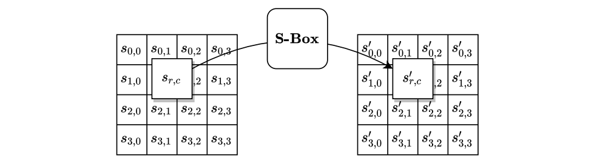
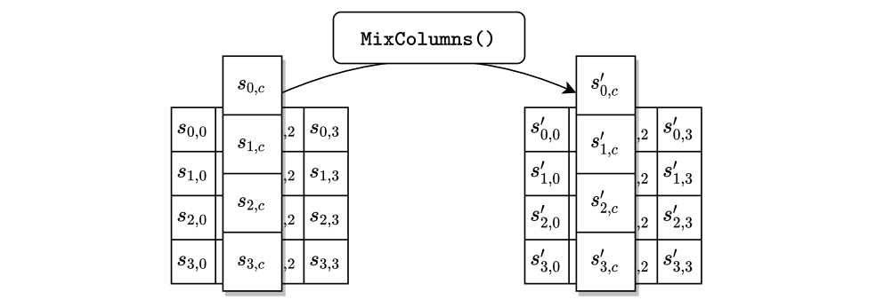
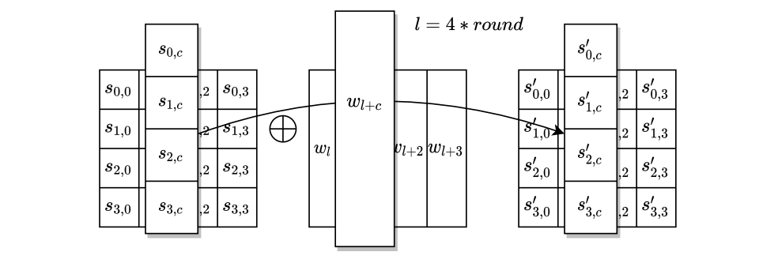
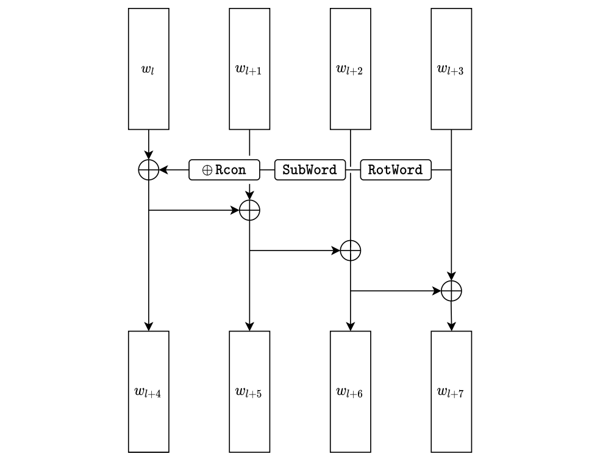
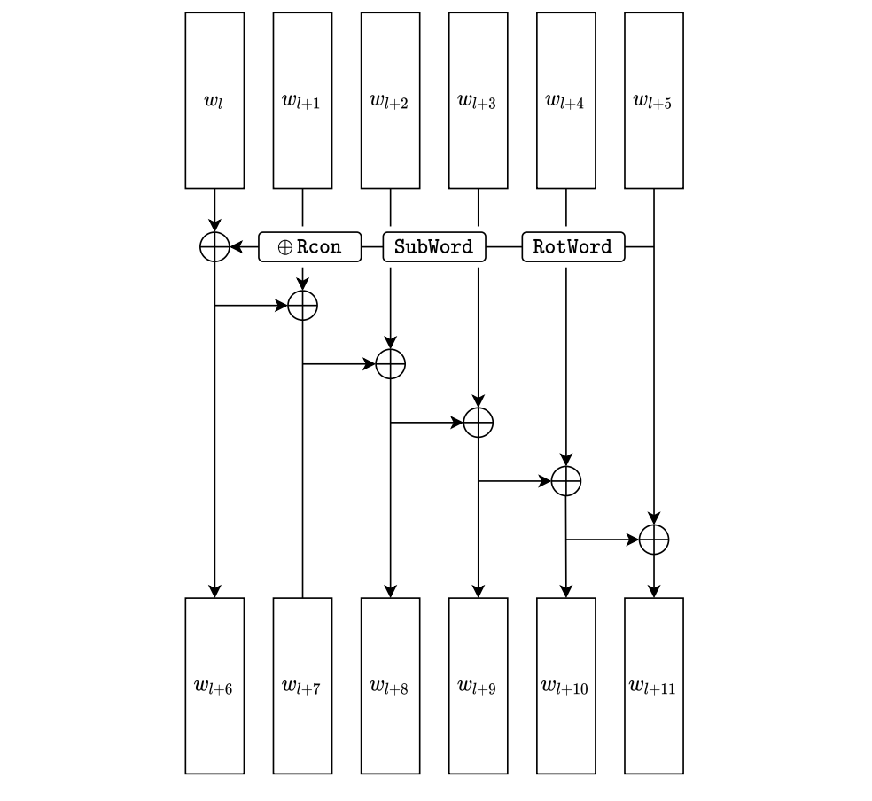

NIST FIPS 197 日本語訳
英語タイトル : Advanced Encryption Standard (AES)日本語タイトル : 高度暗号化標準（AES）
公開日 : 2023-05-09
原文URL : https://csrc.nist.gov/pubs/fips/197/final
翻訳編集 : 自動生成（有志による非公式の日本語訳）, 原文取得日 : 2026-10-25, 訳文 : 465 / 471 ブロック
[要約] FIPS 197 は、Rijndaelブロック暗号ファミリのうちAES-128、AES-192、AES-256を規定する高度暗号化標準（AES）です。いずれも128ビットのブロック単位でデータを変換し、数字の接尾辞は鍵のビット長を示します。表記法と数学的準備に続き、CIPHER()、KEYEXPANSION()、INVCIPHER()を定めます。2000年のAES競技会の勝者としてRijndaelが選定された経緯を背景に、鍵長の要件や実装上の提案、暗号利用モードにも触れます。
FIPS 197
FIPS 197
Federal Information Processing Standards Publication
連邦情報処理標準出版物
Advanced Encryption Standard (AES)
高度暗号化標準（AES）
Category: Computer Security
分類：コンピュータセキュリティ
Subcategory: Cryptography
小分類：暗号
Information Technology Laboratory National Institute of Standards and Technology Gaithersburg, MD 20899-8900
情報技術ラボラトリ 米国国立標準技術研究所 Gaithersburg, MD 20899-8900
This publication is available free of charge from: https://doi.org/10.6028/NIST.FIPS.197-upd1
本出版物は次から無償で入手できる：https://doi.org/10.6028/NIST.FIPS.197-upd1
Published November 26, 2001; Updated May 9, 2023
2001年11月26日発行、2023年5月9日更新
U.S. Department of Commerce Donald L. Evans, Secretary
米国商務省 長官 Donald L. Evans
Technology Administration Phillip J. Bond, Under Secretary for Technology
技術局 技術担当次官 Phillip J. Bond
National Institute of Standards and Technology Karen H. Brown, Acting Director
米国国立標準技術研究所 所長代行 Karen H. Brown
Foreword
まえがき
The Federal Information Processing Standards Publication Series of the National Institute of Standards and Technology is the official series of publications relating to standards and guidelines developed under 15 U.S.C. 278g-3, and issued by the Secretary of Commerce under 40 U.S.C. 11331.
米国国立標準技術研究所の連邦情報処理標準出版物シリーズは、15 U.S.C. 278g-3に基づいて策定され、40 U.S.C. 11331に基づいて商務長官が発行する標準およびガイドラインに関する公式の出版物シリーズです。
Comments concerning this Federal Information Processing Standard publication are welcomed and should be submitted using the contact information in the “Inquiries and comments” clause of the announcement section.
本連邦情報処理標準出版物に関するコメントを歓迎します。コメントは、公告部分の「Inquiries and comments（問い合わせおよびコメント）」条項に記載された連絡先を用いて提出することが望ましい。
James A. St. Pierre, Acting Director Information Technology Laboratory
情報技術ラボラトリ 所長代行 James A. St. Pierre
Abstract
概要
In 2000, NIST announced the selection of the Rijndael block cipher family as the winner of the Advanced Encryption Standard (AES) competition. Block ciphers are the foundation for many cryptographic services, especially those that provide assurance of the confidentiality of data.
2000年、NISTは、Advanced Encryption Standard (AES) 競技会の勝者としてRijndaelブロック暗号ファミリを選定したことを発表しました。ブロック暗号は多くの暗号サービスの基盤であり、特にデータの機密性を保証するサービスの基盤となっています。
Three members of the Rijndael family are specified in this Standard: AES-128, AES-192, and AES-256. Each of them transforms data in blocks of 128 bits, and the numerical suffix indicates the bit length of the associated cryptographic keys.
本標準では、Rijndaelファミリのうち3つのメンバー、すなわちAES-128、AES-192、AES-256を規定します。いずれも128ビットのブロック単位でデータを変換し、数字の接尾辞は対応する暗号鍵のビット長を示します。
Keywords:
キーワード：
AES; block cipher; confidentiality; cryptography; encryption; Rijndael.
AES、ブロック暗号、機密性、暗号、暗号化、Rijndael。
Federal Information
連邦情報
Processing Standards Publication 197
処理標準出版物 197
Published: November 26, 2001
発行：2001年11月26日
Updated: May 9, 2023
更新：2023年5月9日
Announcing the ADVANCED ENCRYPTION STANDARD (AES)
ADVANCED ENCRYPTION STANDARD (AES) の公告
Federal Information Processing Standards Publications (FIPS) are developed by NIST under 15 U.S.C. 278g-3 and issued by the Secretary of Commerce under 40 U.S.C. 11331.
連邦情報処理標準出版物（FIPS）は、15 U.S.C. 278g-3に基づいてNISTが策定し、40 U.S.C. 11331に基づいて商務長官が発行します。
1.Name of Standard. Advanced Encryption Standard (AES) (FIPS 197).
1.標準の名称。Advanced Encryption Standard (AES) (FIPS 197)。
2.Category of Standard. Computer Security Standard, Cryptography.
2.標準の分類。コンピュータセキュリティ標準、暗号。
3.Explanation. The Advanced Encryption Standard (AES) specifies a FIPS-approved cryptographic algorithm that can be used to protect electronic data. The AES algorithm is a symmetric block cipher that can encrypt (encipher) and decrypt (decipher) digital information.
3.説明。Advanced Encryption Standard (AES) は、電子データの保護に使用できるFIPS承認の暗号アルゴリズムを規定します。AESアルゴリズムは対称ブロック暗号であり、デジタル情報を暗号化（encipher）および復号（decipher）できます。
The AES algorithm is capable of using cryptographic keys of 128, 192, and 256 bits to encrypt and decrypt data in blocks of 128 bits.
AESアルゴリズムは、128ビット、192ビット、256ビットの暗号鍵を用いて、128ビットのブロック単位でデータを暗号化および復号できます。
4.Approving Authority. Secretary of Commerce.
4.承認機関。商務長官。
5.Maintenance Agency. Department of Commerce, National Institute of Standards and Technology, Information Technology Laboratory (ITL).
5.維持管理機関。商務省 米国国立標準技術研究所 情報技術ラボラトリ（ITL）。
6.Applicability. Federal Information Processing Standards apply to information systems used or operated by federal agencies, a contractor of an agency, or other organization on behalf of an agency. They do not apply to national security systems as defined in 44 U.S.C. 3552.
6.適用範囲。連邦情報処理標準は、連邦政府機関、政府機関の請負業者、または政府機関に代わるその他の組織が使用または運用する情報システムに適用されます。44 U.S.C. 3552に定義される国家安全保障システムには適用されません。
This Standard may be used by federal agencies to protect information when they have determined that encryption is appropriate, in accordance with applicable Office of Management and Budget and agency policies. Federal agencies may also use alternative methods that NIST has indicated are appropriate for this purpose.
連邦政府機関は、適用される行政管理予算局（Office of Management and Budget）および各機関の方針に従い、暗号化が適切であると判断した場合に、情報を保護するために本標準を使用してよい。連邦政府機関は、この目的に適切であるとNISTが示した代替手段を使用してもよいです。
This Standard may be adopted and used by non-Federal Government organizations.
本標準は、連邦政府以外の組織が採用し使用してよい。
7.Specifications. Federal Information Processing Standard (FIPS) 197, Advanced Encryption Standard (AES) (affixed).
7.仕様。Federal Information Processing Standard (FIPS) 197, Advanced Encryption Standard (AES)（添付）。
8.Implementations. The algorithm specified in this Standard may be implemented in software, firmware, hardware, or any combination thereof. The specific implementation may depend on several factors, such as the application, the environment, the technology used, etc. The algorithm shall be used in conjunction with a FIPS-approved or NIST-recommended mode of operation. Object Identifiers (OIDs) and any associated parameters for AES used in these modes are available at the Computer Security Objects Register (CSOR), located at https://csrc.nist.gov/projects/csor.
8.実装。本標準で規定するアルゴリズムは、ソフトウェア、ファームウェア、ハードウェア、またはそれらの任意の組合せで実装してよい。具体的な実装は、アプリケーション、環境、使用する技術など、いくつかの要因に依存し得ます。本アルゴリズムは、FIPS承認またはNIST推奨の利用モードと組み合わせて使用しなければなりません。これらのモードで使用するAESのオブジェクト識別子（OID）および関連パラメータは、https://csrc.nist.gov/projects/csor にあるComputer Security Objects Register（CSOR）で入手できます。
NIST has developed a validation program to test implementations for conformance to the algorithms in this Standard. Information about the validation program is available at https: //nist.gov/cmvp. Examples for each key size are available at https://csrc.nist.gov/projects/aes.
NISTは、本標準のアルゴリズムへの適合性について実装を試験する検証プログラムを策定しています。検証プログラムに関する情報は https: //nist.gov/cmvp で入手できます。各鍵長の例は https://csrc.nist.gov/projects/aes で入手できます。
9.Implementation Schedule. This Standard became effective on May 26, 2002.
9.実施スケジュール。本標準は2002年5月26日に発効しました。
10.Patents. Implementations of the algorithm specified in this Standard may be covered by U.S. and foreign patents.
10.特許。本標準で規定するアルゴリズムの実装は、米国および外国の特許の対象となる場合があります。
11.Export Control. Certain cryptographic devices and technical data regarding them are subject to federal export controls. Exports of cryptographic modules implementing this Standard and technical data regarding them must comply with all federal laws and regulations and must be licensed by the Bureau of Industry and Security of the U.S. Department of Commerce. Information about export regulations is available at https://www.bis.doc.gov.
11.輸出管理。特定の暗号デバイスおよびそれに関する技術データは、連邦の輸出管理の対象となります。本標準を実装する暗号モジュールおよびそれに関する技術データの輸出は、すべての連邦法および規則に従わなければならず、米国商務省産業安全保障局（Bureau of Industry and Security）の許可を受けなければなりません。輸出規制に関する情報は https://www.bis.doc.gov で入手できます。
12.Qualifications. NIST will continue to follow developments in the analysis of the AES algorithm. As with its other cryptographic algorithm standards, NIST will formally reevaluate this Standard every five years.
12.留意事項。NISTは、AESアルゴリズムの分析の進展を引き続き注視します。NISTは、他の暗号アルゴリズム標準と同様に、本標準を5年ごとに正式に再評価します。
Both this Standard and possible threats reducing the security provided through the use of this Standard will undergo review by NIST as appropriate, taking into account newly available analysis and technology. In addition, the awareness of any breakthrough in technology or any mathematical weakness of the algorithm will cause NIST to reevaluate this Standard and provide necessary revisions.
本標準、および本標準の使用によって得られるセキュリティを低下させ得る脅威の双方について、新たに得られた分析と技術を考慮して、NISTが適宜レビューを行います。さらに、技術上の飛躍的進歩やアルゴリズムの数学的な弱点が認識された場合、NISTは本標準を再評価し、必要な改訂を行います。
13.Where to Obtain Copies. This publication is available by accessing https://csrc.nist.gov/ publications. Other computer security publications are available at the same website.
13.入手先。本出版物は https://csrc.nist.gov/ publications にアクセスして入手できます。その他のコンピュータセキュリティ出版物も同じWebサイトで入手できます。
14.Inquiries and Comments. Inquiries and comments about this FIPS may be submitted to fips-197-comments@nist.gov.
14.問い合わせおよびコメント。本FIPSに関する問い合わせおよびコメントは fips-197-comments@nist.gov に提出してよい。
15.How to Cite This Publication. NIST has assigned NIST FIPS 197-upd1 as the publication identifier for this FIPS, per the NIST Technical Series Publication Identifier Syntax. NIST recommends that it be cited as follows:
15.本出版物の引用方法。NISTは、NIST Technical Series Publication Identifier Syntaxに従い、本FIPSの出版物識別子としてNIST FIPS 197-upd1を割り当てています。NISTは、次のように引用することを推奨する：
National Institute of Standards and Technology (2001) Advanced Encryption Standard (AES). (Department of Commerce, Washington, D.C.), Federal Information Processing Standards Publication (FIPS) NIST FIPS 197-upd1, updated May 9, 2023. https://doi.org/10.6028/NIST.FIPS.197-upd1
National Institute of Standards and Technology (2001) Advanced Encryption Standard (AES). (Department of Commerce, Washington, D.C.), Federal Information Processing Standards Publication (FIPS) NIST FIPS 197-upd1, updated May 9, 2023. https://doi.org/10.6028/NIST.FIPS.197-upd1
Federal Information Processing Standards Publication 197
連邦情報処理標準出版物 197
Specification for the ADVANCED ENCRYPTION STANDARD (AES)
ADVANCED ENCRYPTION STANDARD (AES) の仕様
Table of Contents
目次
List of Tables
表一覧
List of Figures
図一覧
List of Algorithms
アルゴリズム一覧
1. Introduction
1. はじめに
A block is a sequence of bits of a given fixed length. A block cipher is a family of permutations of blocks that is parameterized by a sequence of bits called the key.
ブロックとは、所定の固定長をもつビット列です。ブロック暗号とは、鍵と呼ばれるビット列によってパラメータ化された、ブロックの置換の族です。
In 1997, NIST initiated the Advanced Encryption Standard (AES) development effort [1] and called for the public to submit candidate algorithms for block ciphers. Block ciphers are the foundation for many cryptographic services, especially those that provide assurance of the confidentiality of data. In 2000, NIST announced the selection of Rijndael [2, 3] for the AES.
1997年、NISTはAdvanced Encryption Standard (AES) の策定作業 [1] を開始し、ブロック暗号の候補アルゴリズムを公募しました。ブロック暗号は多くの暗号サービスの基盤であり、特にデータの機密性を保証するサービスの基盤となっています。2000年、NISTはAESとしてRijndael [2, 3] を選定したことを発表しました。
This Standard specifies three instantiations of Rijndael: AES-128, AES-192, and AES-256, where the suffix indicates the bit length of the key. The block size (i.e., the length of the data inputs and outputs) is 128 bits in each case. Rijndael supports additional block sizes and key lengths that are not adopted in this Standard.
本標準は、Rijndaelの3つのインスタンス、すなわちAES-128、AES-192、AES-256を規定します。接尾辞は鍵のビット長を示します。ブロックサイズ（すなわち、データの入力および出力の長さ）はいずれの場合も128ビットです。Rijndaelは、本標準では採用していない追加のブロックサイズおよび鍵長もサポートします。
This Standard is organized as follows:
本標準の構成は次のとおりです。
•Section 2 defines the terms, acronyms, algorithm parameters, symbols, and functions in this Standard.
•第2節では、本標準における用語、略語、アルゴリズムのパラメータ、記号、および関数を定義します。
•Section 3 describes the notation and conventions for the ordering and indexing of bits, bytes, and words.
•第3節では、ビット、バイト、ワードの順序付けおよびインデックス付けに関する表記法と規約を説明します。
•Section 4 explains some mathematical components of the AES specifications: finite field arithmetic and multiplication by a fixed matrix of finite field elements.
•第4節では、AES仕様の数学的構成要素、すなわち有限体の演算と、有限体の元からなる固定行列による乗算について説明します。
•Section 5 specifies AES-128, AES-192, and AES-256.
•第5節では、AES-128、AES-192、AES-256を規定します。
•Section 6 provides implementation guidelines on key length requirements, keying restrictions, parameter extensions, and implementation suggestions regarding various platforms.
•第6節では、鍵長の要件、鍵の設定に関する制限、パラメータの拡張、および各種プラットフォームに関する実装上の提案について、実装のガイドラインを示します。
•Appendix A gives examples of the key expansion routines for AES-128, AES-192, and AES-256.
•付録Aでは、AES-128、AES-192、AES-256の鍵拡張ルーチンの例を示します。
•Appendix B gives a step-by-step example of an invocation of AES-128.
•付録Bでは、AES-128の呼び出しを段階的に示した例を示します。
•Appendix C gives a reference to the NIST website for extensive example vectors for AES-128, AES-192, and AES-256.
•付録Cでは、AES-128、AES-192、AES-256の多数の例示ベクトルを掲載したNISTのWebサイトへの参照を示します。
•Appendix D summarizes the updates to the original version of this publication.
•付録Dでは、本出版物の初版からの更新内容をまとめます。
2. Definitions
2. 定義
2.1 Terms and Acronyms
2.1 用語および略語
The following definitions are used in this Standard:
本標準では次の定義を用います。
AES — Advanced Encryption Standard.
AES — Advanced Encryption Standard。
Affine transformation — A transformation consisting of multiplication by a matrix, followed by the addition of a vector.
アフィン変換 — 行列による乗算と、それに続くベクトルの加算からなる変換。
Array — A fixed-size data structure that stores a collection of elements, where each element is identified by its integer index or indices.
配列 — 要素の集まりを格納する固定サイズのデータ構造であり、各要素は1つまたは複数の整数インデックスによって識別されます。
Bit — A binary digit: 0 or 1.
ビット — 2進数字、すなわち0または1。
Block — A sequence of bits of a given fixed length. In this Standard, blocks consist of 128 bits, sometimes represented as arrays of bytes or words.
ブロック — 所定の固定長をもつビット列。本標準では、ブロックは128ビットからなり、バイトまたはワードの配列として表されることもあります。
Block cipher — A family of permutations of blocks that is parameterized by the key.
ブロック暗号 — 鍵によってパラメータ化された、ブロックの置換の族。
Byte — A sequence of eight bits.
バイト — 8ビットの列。
Equivalent inverse cipher — An alternative specification of the inverse of CIPHER() with a structure similar to that of CIPHER() and with a modified key schedule as input.
等価逆暗号 — CIPHER() の逆変換の代替仕様であり、CIPHER() と類似した構造をもち、変更された鍵スケジュールを入力とします。
Key — The parameter of a block cipher that determines the selection of a permutation from the block cipher family.
鍵 — ブロック暗号のパラメータであり、ブロック暗号の族からどの置換を選択するかを決定します。
Key schedule — The sequence of round keys that are generated from the key by KEYEXPANSION().
鍵スケジュール — KEYEXPANSION() によって鍵から生成されるラウンド鍵の列。
Rijndael — The block cipher that NIST selected as the winner of the AES competition.
Rijndael — NISTがAES競技会の勝者として選定したブロック暗号。
Round — A sequence of transformations of the state that is iterated Nr times in the specifications of CIPHER(), INVCIPHER(), and EQINVCIPHER(). The sequence consists of four transformations, except for one iteration, in which one of the transformations is omitted.
ラウンド — CIPHER()、INVCIPHER()、EQINVCIPHER() の仕様においてNr回反復される、ステートの変換の列。この列は4つの変換からなるが、1回の反復においてのみ、変換の1つが省略されます。
Round key — One of the \(Nr + 1\) arrays of four words that are derived from the block cipher key using the key expansion routine; each round key is an input to an instance of ADDROUNDKEY() in the AES block cipher.
ラウンド鍵 — 鍵拡張ルーチンを用いてブロック暗号の鍵から導出される、4ワードからなる \(Nr + 1\) 個の配列の1つ。各ラウンド鍵は、AESブロック暗号におけるADDROUNDKEY() の各インスタンスへの入力となります。
State — Intermediate result of the AES block cipher that is represented as a two-dimensional array of bytes with four rows and Nb columns.
ステート — AESブロック暗号の中間結果であり、4行Nb列のバイトの2次元配列として表されます。
S-box — A non-linear substitution table used in SUBBYTES() and KEYEXPANSION() to perform a one-to-one substitution of a byte value.
Sボックス — SUBBYTES() およびKEYEXPANSION() で使用される非線形の置換表であり、バイト値の1対1の置換を行います。
Word — A group of 32 bits that is treated either as a single entity or as an array of 4 bytes.
ワード — 32ビットのまとまりであり、単一の実体として、または4バイトの配列として扱われます。
2.2 List of Functions
2.2 関数一覧
The following functions are specified in this Standard:
本標準では次の関数を規定します。
ADDROUNDKEY() — The transformation of the state in which a round key is combined with the state.
ADDROUNDKEY() — ラウンド鍵をステートと結合するステートの変換。
AES-128() — The block cipher specified in this Standard with 128-bit keys.
AES-128() — 本標準で規定する、128ビット鍵を用いるブロック暗号。
AES-192() — The block cipher specified in this Standard with 192-bit keys.
AES-192() — 本標準で規定する、192ビット鍵を用いるブロック暗号。
AES-256() — The block cipher specified in this Standard with 256-bit keys.
AES-256() — 本標準で規定する、256ビット鍵を用いるブロック暗号。
CIPHER() — The transformation of blocks that underlies AES-128, AES-192, and AES-256; the key schedule and the number of rounds are parameters of the transformation.
CIPHER() — AES-128、AES-192、AES-256の基礎となるブロックの変換。鍵スケジュールとラウンド数はこの変換のパラメータです。
EQINVCIPHER() — The inverse of CIPHER() in which \(dw\) replaces \(w\) as the key schedule parameter.
EQINVCIPHER() — 鍵スケジュールのパラメータとして \(w\) の代わりに \(dw\) を用いる、CIPHER() の逆変換。
INVCIPHER() — The inverse of CIPHER().
INVCIPHER() — CIPHER() の逆変換。
INVMIXCOLUMNS() — The inverse of MIXCOLUMNS().
INVMIXCOLUMNS() — MIXCOLUMNS() の逆変換。
INVSBOX() — The inverse of SBOX().
INVSBOX() — SBOX() の逆変換。
INVSHIFTROWS() — The inverse of SHIFTROWS().
INVSHIFTROWS() — SHIFTROWS() の逆変換。
INVSUBBYTES() — The inverse of SUBBYTES().
INVSUBBYTES() — SUBBYTES() の逆変換。
KEYEXPANSION() — The routine that generates the round keys from the key.
KEYEXPANSION() — 鍵からラウンド鍵を生成するルーチン。
KEYEXPANSIONEIC() — The routine that generates the modified round keys for the equivalent inverse cipher.
KEYEXPANSIONEIC() — 等価逆暗号のための変更されたラウンド鍵を生成するルーチン。
MIXCOLUMNS() — The transformation of the state that takes all of the columns of the state and mixes their data (independently of one another) to produce new columns.
MIXCOLUMNS() — ステートのすべての列を取り、各列のデータを（互いに独立に）混合して新しい列を生成するステートの変換。
ROTWORD() — The transformation of words in which the four bytes of the word are permuted cyclically.
ROTWORD() — ワードの4バイトを巡回的に置換するワードの変換。
SBOX() — The transformation of bytes defined by the S-box.
SBOX() — Sボックスによって定義されるバイトの変換。
SHIFTROWS() — The transformation of the state in which the last three rows are cyclically shifted by different offsets.
SHIFTROWS() — 最後の3行をそれぞれ異なるオフセットで巡回シフトするステートの変換。
SUBBYTES() — The transformation of the state that applies the S-box independently to each byte of the state.
SUBBYTES() — ステートの各バイトに独立にSボックスを適用するステートの変換。
SUBWORD() — The transformation of words in which the S-box is applied to each of the four bytes of the word.
SUBWORD() — ワードの4バイトそれぞれにSボックスを適用するワードの変換。
XTIMES() — The transformation of bytes in which the polynomial representation of the input byte is multiplied by \(x\), modulo \(m(x)\), to produce the polynomial representation of the output byte.
XTIMES() — 入力バイトの多項式表現に \(m(x)\) を法として \(x\) を乗じ、出力バイトの多項式表現を生成するバイトの変換。
2.3 Algorithm Parameters and Symbols
2.3 アルゴリズムのパラメータおよび記号
\(b^{-1}\) — The multiplicative inverse of the element \(b\) in \(\mathrm{GF}(2^8)\).
\(b^{-1}\) — \(\mathrm{GF}(2^8)\) における元 \(b\) の乗法逆元。
\(\tilde{b}\) — The input to the affine transformation in the AES S-box.
\(\tilde{b}\) — AESのSボックスにおけるアフィン変換への入力。
\(dw\) — Word array for the key schedule that is input to the equivalent inverse cipher.
\(dw\) — 等価逆暗号に入力される鍵スケジュールのワード配列。
GF(2) — Finite field with two elements.
GF(2) — 2個の元からなる有限体。
\(\mathrm{GF}(2^8)\) — Finite field with 256 elements.
\(\mathrm{GF}(2^8)\) — 256個の元からなる有限体。
\(in\) — The data input to CIPHER() or INVCIPHER(), represented as an array of 16 bytes indexed from 0 to 15.
\(in\) — CIPHER() またはINVCIPHER() へのデータ入力。0から15までのインデックスが付いた16バイトの配列として表されます。
\(m(x)\) — The modulus specified in this standard for the polynomial representation of bytes as elements of \(\mathrm{GF}(2^8)\).
\(m(x)\) — バイトを \(\mathrm{GF}(2^8)\) の元として多項式表現する際の、本標準で規定する法。
\(key\) — The array of \(Nk\) words that comprise the key for AES-128, AES-192, or AES-256.
\(key\) — AES-128、AES-192、またはAES-256の鍵を構成する \(Nk\) 個のワードの配列。
\(Nb\) — The number of columns comprising the state, where each column is a 32-bit word. For this Standard, \(Nb = 4\).
\(Nb\) — ステートを構成する列の数。各列は32ビットのワードです。本標準では \(Nb = 4\) です。
\(Nk\) — The number of 32-bit words comprising the key. \(Nk\) is assigned to 4, 6, and 8 for AES-128, AES-192, and AES-256, respectively. (see Section 6.3).
\(Nk\) — 鍵を構成する32ビットワードの数。\(Nk\) には、AES-128、AES-192、AES-256に対してそれぞれ4、6、8が割り当てられる（6.3節を参照してください）。
\(Nr\) — The number of rounds. \(Nr\) is assigned to 10, 12, and 14 for AES-128, AES-192, and AES-256, respectively.
\(Nr\) — ラウンド数。\(Nr\) には、AES-128、AES-192、AES-256に対してそれぞれ10、12、14が割り当てられます。
\(out\) — The data output of CIPHER() or INVCIPHER(), represented as an array of 16 bytes indexed from 0 to 15.
\(out\) — CIPHER() またはINVCIPHER() のデータ出力。0から15までのインデックスが付いた16バイトの配列として表されます。
\(Rcon\) — Word array for the round constant.
\(Rcon\) — ラウンド定数のワード配列。
\(state\) — The state, represented as a two-dimensional array of 16 bytes, with rows and columns indexed from 0 to 3.
\(state\) — ステート。行と列に0から3までのインデックスが付いた16バイトの2次元配列として表されます。
\(u[i]\) — For a one-dimensional array \(u\) of words or bytes, the element in the array that is indexed by a non-negative integer \(i\).
\(u[i]\) — ワードまたはバイトの1次元配列 \(u\) において、非負整数 \(i\) でインデックス付けされる配列の要素。
\(u[i..i+3]\) — For an array \(u\) of words, the sequence \(u[i], u[i+1], u[i+2], u[i+3]\).
\(u[i..i+3]\) — ワードの配列 \(u\) における列 \(u[i], u[i+1], u[i+2], u[i+3]\)。
\(w\) — Word array for the key schedule.
\(w\) — 鍵スケジュールのワード配列。
\(\oplus\) — Either the exclusive-OR operation on bits, the bitwise exclusive-OR operation on bytes, or the bitwise exclusive-OR operation on words.
\(\oplus\) — ビットに対する排他的論理和演算、バイトに対するビット単位の排他的論理和演算、またはワードに対するビット単位の排他的論理和演算。
\(\bullet\) — Multiplication in \(\mathrm{GF}(2^8)\).
\(\bullet\) — \(\mathrm{GF}(2^8)\) における乗算。
\(*\) — Integer multiplication.
\(*\) — 整数の乗算。
\(\leftarrow\) — Assignment of a variable in pseudocode.
\(\leftarrow\) — 擬似コードにおける変数への代入。
\(\{\}\) — Delimiters for a byte in hexadecimal or binary notation.
\(\{\}\) — 16進表記または2進表記のバイトを囲む区切り記号。
3. Notation and Conventions
3. 表記法と規約
3.1 Inputs and Outputs
3.1 入力と出力
A bit is a binary digit — 0 or 1. A block is a sequence of 128 bits; the data input and output for the AES block ciphers are blocks. Another input to the AES block ciphers, called the key, is a bit sequence that is typically established beforehand and maintained across many invocations of the block cipher. The lengths of the keys for AES-128, AES-192, and AES-256 are 128 bits, 192 bits, and 256 bits, respectively.
ビットは2進数字、すなわち0または1です。ブロックは128ビットの列であり、AESブロック暗号のデータ入力および出力はブロックです。AESブロック暗号のもう一つの入力は鍵と呼ばれ、通常は事前に確立され、ブロック暗号の多数回の呼出しにわたって維持されるビット列です。AES-128、AES-192、AES-256の鍵長は、それぞれ128ビット、192ビット、256ビットです。
3.2 Bytes
3.2 バイト
The basic processing unit in the AES algorithms is the byte — a sequence of eight bits.
AESアルゴリズムにおける基本的な処理単位はバイト、すなわち8ビットの列です。
A byte value is denoted by the concatenation of the eight bits between braces (e.g., {10100011}). When the bits of a byte are denoted by an indexed variable, the convention in this Standard is for the indices to decrease from left to right (i.e., \(\{b_7\, b_6\, b_5\, b_4\, b_3\, b_2\, b_1\, b_0\}\)).
バイト値は、8つのビットを連結して波括弧で囲んで表す（例：{10100011}）。バイトのビットを添字付き変数で表す場合、本標準では添字が左から右へ減少する規約をとる（すなわち \(\{b_7\, b_6\, b_5\, b_4\, b_3\, b_2\, b_1\, b_0\}\)）。
It is also convenient to denote byte values using hexadecimal notation. The 16 hexadecimal characters represent sequences of four bits, as listed in Table 1. A byte is represented by an ordered pair of hexadecimal characters, where the left character in the pair represents the four left-most bits(i.e., \(b_7, b_6, b_5, b_4\)), and the right character in the pair represents the four right-most bits (i.e., \(b_3, b_2, b_1, b_0\)). For example, the hexadecimal form of the byte {10100011} is {a3}.
バイト値を16進表記で表すことも便利です。16個の16進文字は、表1に示すとおり4ビットの列を表します。バイトは16進文字の順序対で表され、対の左の文字が左端の4ビット（すなわち \(b_7, b_6, b_5, b_4\)）を、右の文字が右端の4ビット（すなわち \(b_3, b_2, b_1, b_0\)）を表します。たとえば、バイト {10100011} の16進形式は {a3} です。
Table 1. Hexadecimal representation of 4-bit sequences
表1. 4ビット列の16進表現
| Sequence | 0000 | 0001 | 0010 | 0011 | 0100 | 0101 | 0110 | 0111 |
| Character | 0 | 1 | 2 | 3 | 4 | 5 | 6 | 7 |
| Sequence | 1000 | 1001 | 1010 | 1011 | 1100 | 1101 | 1110 | 1111 |
| Character | 8 | 9 | a | b | c | d | e | f |
| ビット列 | 0000 | 0001 | 0010 | 0011 | 0100 | 0101 | 0110 | 0111 |
| 文字 | 0 | 1 | 2 | 3 | 4 | 5 | 6 | 7 |
| ビット列 | 1000 | 1001 | 1010 | 1011 | 1100 | 1101 | 1110 | 1111 |
| 文字 | 8 | 9 | a | b | c | d | e | f |
3.3 Indexing of Byte Sequences
3.3 バイト列の添字付け
In order to unambiguously represent the data and key inputs as sequences of bytes, the following indexing convention is adopted in this Standard. Given a sequence of \(8k\) bits,
データ入力および鍵入力をバイト列として曖昧さなく表すために、本標準では次の添字付けの規約を採用します。\(8k\) ビットの列
(for some positive integer \(k\)), the bytes \(a_j\) for \(0 \le j \le k-1\) are defined as follows:
（\(k\) はある正の整数）が与えられたとき、\(0 \le j \le k-1\) に対するバイト \(a_j\) を次のように定義します。
is represented by the byte sequence
は、次のバイト列で表されます。
where
ここで、
As described in Section 3.2, the bits within any individual byte are indexed in decreasing order from left to right. This ordering is more natural for the finite field arithmetic on bytes that is described in Section 4. The two types of bit indices for byte sequences are illustrated in Table 2.
3.2節で述べたとおり、個々のバイト内のビットには左から右へ減少する順に添字を付けます。この順序は、4節で述べるバイト上の有限体演算にとってより自然です。バイト列に対する2種類のビット添字を表2に示します。
Table 2. Indices for bytes and bits
表2. バイトとビットの添字
| Bit index in sequence | 0 | 1 | 2 | 3 | 4 | 5 | 6 | 7 | 8 | 9 | 10 | 11 | 12 | 13 | 14 | 15 | ... |
| Byte index | 0 | 1 | ... | ||||||||||||||
| Bit index in byte | 7 | 6 | 5 | 4 | 3 | 2 | 1 | 0 | 7 | 6 | 5 | 4 | 3 | 2 | 1 | 0 | ... |
| 列内のビット添字 | 0 | 1 | 2 | 3 | 4 | 5 | 6 | 7 | 8 | 9 | 10 | 11 | 12 | 13 | 14 | 15 | ... |
| バイト添字 | 0 | 1 | ... | ||||||||||||||
| バイト内のビット添字 | 7 | 6 | 5 | 4 | 3 | 2 | 1 | 0 | 7 | 6 | 5 | 4 | 3 | 2 | 1 | 0 | ... |
3.4 The State
3.4 ステート
Internally, the algorithms for the AES block ciphers are performed on a two-dimensional (four-by-four) array of bytes called the state. In the state array, denoted by \(s\), each individual byte has two indices: a row index \(r\) in the range \(0 \le r < 4\) and a column index \(c\) in the range \(0 \le c < 4\). An individual byte of the state is denoted by either \(s_{r,c}\) or \(s[r,c]\).
AESブロック暗号のアルゴリズムは、内部的にはステートと呼ばれるバイトの2次元（4×4）配列に対して実行されます。\(s\) で表されるステート配列では、個々のバイトは2つの添字、すなわち \(0 \le r < 4\) の範囲の行添字 \(r\) と \(0 \le c < 4\) の範囲の列添字 \(c\) をもちます。ステートの個々のバイトは \(s_{r,c}\) または \(s[r,c]\) で表します。
In the specifications for the AES block cipher algorithms in Section 5, the first step is to copy the input array of bytes \(in_0, in_1, \ldots, in_{15}\) to the state array \(s\) as follows:
5節のAESブロック暗号アルゴリズムの仕様では、最初の手順として、入力バイト配列 \(in_0, in_1, \ldots, in_{15}\) を次のようにステート配列 \(s\) にコピーします。
A sequence of transformations is then applied to the state array, after which its final value is copied to the output array of bytes \(out_0, out_1, \ldots, out_{15}\) as follows:
次に、ステート配列に一連の変換を適用し、その後、ステート配列の最終値を次のように出力バイト配列 \(out_0, out_1, \ldots, out_{15}\) にコピーします。
The correspondence between the indices of the input and output with the indices of the state array is illustrated in Fig. 1.
入力および出力の添字とステート配列の添字との対応を図1に示します。
![Figure 1. State array input and output. Three 4×4 arrays are connected left to right by arrows: input bytes, state array, and output bytes. The input bytes are numbered down each column: in0 to in3 in the first column, in4 to in7 in the second, in8 to in11 in the third and in12 to in15 in the fourth. The state array holds s0,0 to s3,3, with row index first and column index second, so that in0 to in3 correspond to s0,0 to s3,0. The output bytes out0 to out15 are arranged in the same way as the input bytes. Alternate columns are shaded.](assets/fips-197/p0015-drawing-01.png)
図1. ステート配列の入力と出力。3 つの 4×4 の配列が左から右へ矢印でつながる。入力バイト、ステート配列、出力バイトである。入力バイトは列ごとに上から下へ番号が付き、第 1 列が in0～in3、第 2 列が in4～in7、第 3 列が in8～in11、第 4 列が in12～in15 である。ステート配列は s0,0～s3,3 で、添字は行、列の順であり、in0～in3 が s0,0～s3,0 に対応する。出力バイト out0～out15 は入力バイトと同じ並びである。列は 1 列おきに網掛けされている。
Figure 1. State array input and output
図1. ステート配列の入力と出力
3.5 Arrays of Words
3.5 ワードの配列
A word is a sequence of four bytes; a block consists of four words. The four columns of state array \(s\) are interpreted as an array \(v\) of four words as follows, in the notation of Fig. 1:
ワードは4バイトの列であり、ブロックは4ワードからなります。ステート配列 \(s\) の4つの列は、図1の表記を用いて、次のように4ワードの配列 \(v\) と解釈されます。
Thus, the column index \(c\) of \(s\) becomes the index for \(v\), and the row index \(r\) of \(s\) becomes the index for the four bytes in each word.
したがって、\(s\) の列添字 \(c\) は \(v\) の添字となり、\(s\) の行添字 \(r\) は各ワード内の4バイトの添字となります。
Given a one-dimensional array \(u\) of words, \(u[i]\) denotes the word that is indexed by \(i\), and the sequence of four words \(u[i], u[i+1], u[i+2], u[i+3]\) is denoted by \(u[i..i+3]\).
ワードの1次元配列 \(u\) が与えられたとき、\(u[i]\) は添字 \(i\) のワードを表し、4ワードの列 \(u[i], u[i+1], u[i+2], u[i+3]\) を \(u[i..i+3]\) で表します。
4. Mathematical Preliminaries
4. 数学的準備
For some transformations of the AES algorithms specified in Sec. 5, each byte in the state array is interpreted as one of the 256 elements of a finite field, also known as a Galois Field, denoted by \(\mathrm{GF}(2^8)\). 1
5節で規定するAESアルゴリズムの一部の変換では、ステート配列の各バイトを、ガロア体とも呼ばれ \(\mathrm{GF}(2^8)\) で表される有限体の256個の元の一つと解釈します。 1
In order to define addition and multiplication in \(\mathrm{GF}(2^8)\), each byte \(\{b_7\, b_6\, b_5\, b_4\, b_3\, b_2\, b_1\, b_0\}\) is interpreted as a polynomial, denoted by \(b(x)\), as follows:
\(\mathrm{GF}(2^8)\) における加算と乗算を定義するために、各バイト \(\{b_7\, b_6\, b_5\, b_4\, b_3\, b_2\, b_1\, b_0\}\) を、次のように \(b(x)\) で表される多項式と解釈します。
For example, \(\{01100011\}\) is represented by the polynomial \(x^6 + x^5 + x + 1\).
たとえば、\(\{01100011\}\) は多項式 \(x^6 + x^5 + x + 1\) で表されます。
4.1 Addition in \(\mathrm{GF}(2^8)\)
4.1 \(\mathrm{GF}(2^8)\) における加算
In order to add two elements in the finite field \(\mathrm{GF}(2^8)\), the coefficients of the polynomials that represent the elements are added modulo 2 (i.e., with the exclusive-OR operation, denoted by \(\oplus\)), so that \(1 \oplus 1 = 0\), \(1 \oplus 0 = 1\), and \(0 \oplus 0 = 0\).
有限体 \(\mathrm{GF}(2^8)\) の2つの元を加算するには、それらの元を表す多項式の係数を2を法として加算する（すなわち、\(\oplus\) で表される排他的論理和演算を用います）。したがって、\(1 \oplus 1 = 0\)、\(1 \oplus 0 = 1\)、\(0 \oplus 0 = 0\) となります。
Equivalently, two bytes can be added by applying the exclusive-OR operation to each pair of corresponding bits in the bytes. Thus, the sum of \(\{a_7\, a_6\, a_5\, a_4\, a_3\, a_2\, a_1\, a_0\}\) and \(\{b_7\, b_6\, b_5\, b_4\, b_3\, b_2\, b_1\, b_0\}\) is \(\{a_7 \oplus b_7\;\; a_6 \oplus b_6\;\; a_5 \oplus b_5\;\; a_4 \oplus b_4\;\; a_3 \oplus b_3\;\; a_2 \oplus b_2\;\; a_1 \oplus b_1\;\; a_0 \oplus b_0\}\). (In Section 5.1.4, this definition is extended to words.)
同等に、2つのバイトの加算は、両バイトの対応するビットの各組に排他的論理和演算を適用することで行えます。したがって、\(\{a_7\, a_6\, a_5\, a_4\, a_3\, a_2\, a_1\, a_0\}\) と \(\{b_7\, b_6\, b_5\, b_4\, b_3\, b_2\, b_1\, b_0\}\) の和は \(\{a_7 \oplus b_7\;\; a_6 \oplus b_6\;\; a_5 \oplus b_5\;\; a_4 \oplus b_4\;\; a_3 \oplus b_3\;\; a_2 \oplus b_2\;\; a_1 \oplus b_1\;\; a_0 \oplus b_0\}\) である（5.1.4節では、この定義をワードに拡張します）。
For example, the following three representations of addition are equivalent:
たとえば、加算の次の3つの表現は同等です。
Because the coefficients of the polynomials are reduced modulo 2, the coefficient 1 is equivalent to the coefficient –1, so addition is equivalent to subtraction. For example, \(x^4 + x^2\) represents the same finite field element as \(x^4 - x^2\), \(-x^4 + x^2\), and \(-x^4 - x^2\). Similarly, the sum of any element with itself is the zero element.
多項式の係数は2を法として簡約されるため、係数1は係数–1と同等であり、加算は減算と同等です。たとえば、\(x^4 + x^2\) は \(x^4 - x^2\)、\(-x^4 + x^2\)、\(-x^4 - x^2\) と同じ有限体の元を表します。同様に、任意の元とそれ自身との和は零元です。
4.2 Multiplication in \(\mathrm{GF}(2^8)\)
4.2 \(\mathrm{GF}(2^8)\) における乗算
The symbol \(\bullet\) denotes multiplication in \(\mathrm{GF}\left(2^8\right)\). Conceptually, this multiplication is defined on two bytes in two steps: 1) the two polynomials that represent the bytes are multiplied as polynomials, and 2) the resulting polynomial is reduced modulo the following fixed polynomial:
記号 \(\bullet\) は \(\mathrm{GF}\left(2^8\right)\) における乗算を表します。概念的には、この乗算は2つのバイトに対して2段階で定義されます。1）バイトを表す2つの多項式を多項式として乗算し、2）得られた多項式を次の固定多項式を法として簡約します。
Within both steps, the individual coefficients of the polynomials are reduced modulo 2.
どちらの段階でも、多項式の個々の係数は2を法として簡約されます。
Thus, if \(b(x)\) and \(c(x)\) represent bytes \(b\) and \(c\), then \(b \bullet c\) is represented by the following modular reduction of their product as polynomials:
したがって、\(b(x)\) と \(c(x)\) がバイト \(b\) と \(c\) を表すとき、\(b \bullet c\) は、両者の多項式としての積に対する次の剰余簡約で表されます。
The modular reduction by \(m(x)\) may be applied to intermediate steps in the calculation of \(b(x)c(x)\); consequently, it is useful to consider the special case that \(c(x) = x\) (i.e., \(c = \{02\}\)). In particular, the product \(b \bullet \{02\}\) can be expressed as a function of \(b\), denoted by XTIMES(\(b\)), as follows:
\(m(x)\) による剰余簡約は、\(b(x)c(x)\) の計算の途中段階に適用してもよいです。そのため、\(c(x) = x\)（すなわち \(c = \{02\}\)）という特殊な場合を考えると有用です。具体的には、積 \(b \bullet \{02\}\) は、XTIMES(\(b\)) で表される \(b\) の関数として次のように表せます。
Multiplication by higher powers of \(x\) (such as \(\{04\}\), \(\{08\}\), and \(\{10\}\)) can be implemented by the repeated application of XTIMES(). For example, let \(b = \{57\}\):
\(x\) のより高いべき（\(\{04\}\)、\(\{08\}\)、\(\{10\}\) など）による乗算は、XTIMES() を繰り返し適用することで実装できます。たとえば、\(b = \{57\}\) とすると、
These products facilitate the computation of any multiple of \(\{57\}\). For example, because \(\{13\} = \{10\} \oplus \{02\} \oplus \{01\}\), it follows that
これらの積を用いると、\(\{57\}\) の任意の倍数を容易に計算できます。たとえば、\(\{13\} = \{10\} \oplus \{02\} \oplus \{01\}\) であるから、次が成り立ちます。
4.3 Multiplication of Words by a Fixed Matrix
4.3 ワードと固定行列の乗算
Two transformations – MIXCOLUMNS() and INVMIXCOLUMNS() – in the algorithms for the AES block ciphers can be expressed in terms of matrix multiplication. In particular, a distinct fixed matrix is specified for each transformation. For both matrices, each of the 16 entries of the matrix is a byte of a single specified word, denoted here by \([a_0, a_1, a_2, a_3]\).
AESブロック暗号のアルゴリズムにおける2つの変換、MIXCOLUMNS() と INVMIXCOLUMNS() は、行列の乗算によって表すことができます。具体的には、各変換に対して異なる固定行列が規定されます。どちらの行列でも、行列の16個の要素はそれぞれ、ここで \([a_0, a_1, a_2, a_3]\) と表す規定された単一のワードのいずれかのバイトです。
Given an input word \([b_0, b_1, b_2, b_3]\) to the transformation, the output word \([d_0, d_1, d_2, d_3]\) is determined by finite field arithmetic as follows:
変換への入力ワード \([b_0, b_1, b_2, b_3]\) が与えられたとき、出力ワード \([d_0, d_1, d_2, d_3]\) は有限体演算により次のように決まります。
The matrix form of Eq. (4.8) is
式 (4.8) の行列形式は次のとおりです。
4.4 Multiplicative Inverses in GF(\(2^8\))
4.4 GF(\(2^8\)) における乗法逆元
For a byte \(b \ne \{00\}\), its multiplicative inverse is the unique byte, denoted by \(b^{-1}\), such that
バイト \(b \ne \{00\}\) の乗法逆元とは、次を満たす一意のバイトであり、\(b^{-1}\) で表します。
The definition of the SUBBYTES() transformation in the specifications of the AES block cipher involves multiplicative inverses in \(\mathrm{GF}(2^8)\), which can be calculated as follows:
AESブロック暗号の仕様における SUBBYTES() 変換の定義には \(\mathrm{GF}(2^8)\) における乗法逆元が含まれ、これは次のように計算できます。
Alternatively, let \(b(x)\) be the polynomial that represents \(b\). The extended Euclidean algorithm [5] can be applied to \(b(x)\) and \(m(x)\) to find polynomials \(a(x)\) and \(c(x)\) such that
あるいは、\(b(x)\) を \(b\) を表す多項式とします。拡張ユークリッドアルゴリズム [5] を \(b(x)\) と \(m(x)\) に適用すると、次を満たす多項式 \(a(x)\) と \(c(x)\) が求まります。
It follows that \(a(x)\) is the polynomial that represents \(b^{-1}\).
このとき、\(a(x)\) が \(b^{-1}\) を表す多項式です。
5. Algorithm Specifications
5. アルゴリズムの仕様
The general function for executing AES-128, AES-192, or AES-256 is denoted by CIPHER(); its inverse is denoted by INVCIPHER().2
AES-128、AES-192、AES-256を実行する汎用関数を CIPHER() で表し、その逆を INVCIPHER() で表します。2
The core of the algorithms for CIPHER() and INVCIPHER() is a sequence of fixed transformations of the state called a round. Each round requires an additional input called the round key; the round key is a block that is usually represented as a sequence of four words (i.e., 16 bytes).
CIPHER() と INVCIPHER() のアルゴリズムの中核は、ラウンドと呼ばれる、ステートに対する固定された一連の変換です。各ラウンドはラウンド鍵と呼ばれる追加の入力を必要とします。ラウンド鍵はブロックであり、通常は4ワード（すなわち16バイト）の列として表されます。
An expansion routine, denoted by KEYEXPANSION(), takes the block cipher key as input and generates the round keys as output. In particular, the input to KEYEXPANSION() is represented as an array of words, denoted by key, and the output is an expanded array of words, denoted by w, called the key schedule.
KEYEXPANSION() で表される拡張ルーチンは、ブロック暗号の鍵を入力として受け取り、ラウンド鍵を出力として生成します。具体的には、KEYEXPANSION() への入力は key で表されるワードの配列として表され、出力は w で表される拡張されたワードの配列であり、鍵スケジュールと呼ばれます。
The block ciphers AES-128, AES-192, and AES-256 differ in three respects: 1) the length of the key; 2) the number of rounds, which determines the size of the required key schedule; and 3) the specification of the recursion within KEYEXPANSION(). For each algorithm, the number of rounds is denoted by Nr, and the number of words of the key is denoted by Nk. (The number of words in the state is denoted by Nb for Rijndael in general; in this Standard, \(Nb = 4\).) The specific values of Nk, Nb, and Nr are given in Table 3. No other configurations of Rijndael conform to this Standard.
ブロック暗号AES-128、AES-192、AES-256は、次の3点で異なります。1）鍵の長さ、2）ラウンド数（必要な鍵スケジュールのサイズを決める）、3）KEYEXPANSION() 内の再帰の仕様。各アルゴリズムについて、ラウンド数を Nr、鍵のワード数を Nk で表す（ステート内のワード数は、Rijndael 一般では Nb で表します。本標準では \(Nb = 4\) です）。Nk、Nb、Nr の具体的な値を表3に示します。Rijndael のこれ以外の構成は本標準に適合しません。
For implementation issues relating to the key length, block size, and number of rounds, see Section 6.3.
鍵長、ブロックサイズ、ラウンド数に関する実装上の問題については、6.3節を参照のこと。
Table 3. Key-Block-Round Combinations
表3. 鍵・ブロック・ラウンドの組合せ
| Key length | | Block size | | Number of rounds | |||
|---|---|---|---|---|---|
| Nk | (in bits) | Nb | (in bits) | Nr | |
| AES-128 | 4 | 128 | 4 | 128 | 10 |
| AES-192 | 6 | 192 | 4 | 128 | 12 |
| AES-256 | 8 | 256 | 4 | 128 | 14 |
| 鍵長 | | ブロックサイズ | | ラウンド数 | |||
|---|---|---|---|---|---|
| Nk | （ビット） | Nb | （ビット） | Nr | |
| AES-128 | 4 | 128 | 4 | 128 | 10 |
| AES-192 | 6 | 192 | 4 | 128 | 12 |
| AES-256 | 8 | 256 | 4 | 128 | 14 |
The three inputs to CIPHER() are: 1) the data input in, which is a block represented as a linear array of 16 bytes; 2) the number of rounds Nr for the instance; and 3) the round keys. Thus,
CIPHER() への3つの入力は、1）16バイトの線形配列として表されるブロックであるデータ入力 in、2）そのインスタンスのラウンド数 Nr、3）ラウンド鍵です。したがって、
The inverse permutations are defined by replacing CIPHER() with INVCIPHER() in Eq. 5.1.
逆置換は、式5.1において CIPHER() を INVCIPHER() に置き換えることで定義されます。
The specifications of CIPHER(), KEYEXPANSION(), and INVCIPHER() are given in Sections 5.1, 5.2, and 5.3, respectively.
CIPHER()、KEYEXPANSION()、INVCIPHER() の仕様は、それぞれ5.1節、5.2節、5.3節に示します。
5.1 CIPHER()
5.1 CIPHER()
The rounds in the specification of CIPHER() are composed of the following four byte-oriented transformations on the state:
CIPHER() の仕様におけるラウンドは、ステートに対する次の4つのバイト指向の変換で構成されます。
•SUBBYTES() applies a substitution table (S-box) to each byte.
•SUBBYTES() は、各バイトに置換表（Sボックス）を適用します。
•SHIFTROWS() shifts rows of the state array by different offsets.
•SHIFTROWS() は、ステート配列の各行をそれぞれ異なるオフセットだけシフトします。
•MIXCOLUMNS() mixes the data within each column of the state array.
•MIXCOLUMNS() は、ステート配列の各列内でデータを混合します。
•ADDROUNDKEY() combines a round key with the state.
•ADDROUNDKEY() は、ラウンド鍵をステートと結合します。
The four transformations are specified in Sections 5.1.1–5.1.4. In those specifications, the transformed bit, byte, or block is denoted by appending the symbol \({}'\) as a superscript on the original variable \(\big(\)i.e., by \(b'_i\), \(b'\), \(s'_{i,j}\), or \(s'\big)\).
これら4つの変換は5.1.1～5.1.4節で規定します。これらの仕様では、変換後のビット、バイト、またはブロックを、元の変数に上付きの記号 \({}'\) を付けて表す \(\big(\)すなわち \(b'_i\)、\(b'\)、\(s'_{i,j}\)、または \(s'\big)\)。
The round keys for ADDROUNDKEY() are generated by KEYEXPANSION(), which is specified in Section 5.2. In particular, the key schedule is represented as an array \(w\) of \(4 * (Nr + 1)\) words.
ADDROUNDKEY() のラウンド鍵は、5.2節で規定する KEYEXPANSION() によって生成されます。具体的には、鍵スケジュールは \(4 * (Nr + 1)\) ワードの配列 \(w\) として表されます。
CIPHER() is specified in the pseudocode in Alg. 1.
CIPHER() はアルゴリズム1の擬似コードで規定します。
Algorithm 1 Pseudocode for CIPHER()
アルゴリズム1 CIPHER() の擬似コード
1: procedure CIPHER(in, Nr, w)
2: state ← in ▷ See Sec. 3.4
3: state ← ADDROUNDKEY(state, w[0..3]) ▷ See Sec. 5.1.4
4: for round from 1 to Nr − 1 do
5: state ← SUBBYTES(state) ▷ See Sec. 5.1.1
6: state ← SHIFTROWS(state) ▷ See Sec. 5.1.2
7: state ← MIXCOLUMNS(state) ▷ See Sec. 5.1.3
8: state ← ADDROUNDKEY(state, w[4 ∗ round..4 ∗ round + 3])
9: end for
10: state ← SUBBYTES(state)
11: state ← SHIFTROWS(state)
12: state ← ADDROUNDKEY(state, w[4 ∗ Nr..4 ∗ Nr + 3])
13: return state ▷ See Sec. 3.4
14: end procedureThe first step (Line 2) is to copy the input into the state array using the conventions from Sec. 3.4. After an initial round key addition (Line 3), the state array is transformed by Nr applications of the round function (Lines 4–12); the final round (Lines 10–12) differs in that the MIXCOLUMNS() transformation is omitted. The final state is then returned as the output (Line 13), as described in Section 3.4.
最初の手順（2行目）では、3.4節の規約に従って入力をステート配列にコピーします。最初のラウンド鍵の加算（3行目）の後、ステート配列はラウンド関数を Nr 回適用することで変換される（4～12行目）。最終ラウンド（10～12行目）は、MIXCOLUMNS() 変換が省略される点が異なります。その後、3.4節で述べたとおり、最終的なステートが出力として返される（13行目）。
5.1.1 SUBBYTES()
5.1.1 SUBBYTES()
SUBBYTES() is an invertible, non-linear transformation of the state in which a substitution table, called an S-box, is applied independently to each byte in the state. The AES S-box is denoted by SBOX().
SUBBYTES() は、ステートに対する可逆な非線形変換であり、Sボックスと呼ばれる置換表をステート内の各バイトに独立に適用します。AESのSボックスを SBOX() で表します。
Let \(b\) denote an input byte to SBOX(), and let \(c\) denote the constant byte {01100011}. The output byte \(b' = \mathrm{SBOX}(b)\) is constructed by composing the following two transformations:
\(b\) を SBOX() への入力バイトとし、\(c\) を定数バイト {01100011} とします。出力バイト \(b' = \mathrm{SBOX}(b)\) は、次の2つの変換を合成して構成されます。
1.Define an intermediate value \(\tilde{b}\), as follows, where \(b^{-1}\) is the multiplicative inverse of \(b\), as described in Section 4.4:
1.中間値 \(\tilde{b}\) を次のように定義します。ここで、\(b^{-1}\) は 4.4 節で述べた \(b\) の乗法逆元です。
2.Apply the following affine transformation of the bits of \(\tilde{b}\) to produce the bits of \(b'\):
2.\(\tilde{b}\) のビットに次のアフィン変換を適用して、\(b'\) のビットを得ます。
The matrix form of Eq. (5.3) is given by Eq. (5.4) below:
式 (5.3) の行列形式は、次の式 (5.4) で与えられます。
Figure 2 illustrates how SUBBYTES() transforms the state.
図 2 に、SUBBYTES() がステートをどのように変換するかを示します。

図 2. SUBBYTES() の図解。左に 4×4 のステート配列 s0,0～s3,3、右に s′0,0～s′3,3 がある。左の配列で強調された 1 バイト sr,c から、S-Box（Sボックス）と記された箱を通る曲線の矢印が、右の配列の同じ位置のバイト s′r,c へ向かう。
Figure 2. Illustration of SUBBYTES()
図 2. SUBBYTES() の図解
The AES S-box is presented in hexadecimal form in Table 4. For example, if \(s_{r,c} = \{53\}\), then the substitution value would be determined by the intersection of the row with index ‘5’ and the column with index ‘3’ in Table 4, so that \(s'_{r,c} = \{\mathtt{ed}\}\).
AES のSボックスを表 4 に 16 進形式で示します。例えば、\(s_{r,c} = \{53\}\) であれば、置換値は表 4 においてインデックス‘5’の行とインデックス‘3’の列の交点によって決まり、\(s'_{r,c} = \{\mathtt{ed}\}\) となります。
Table 4. SBOX(): substitution values for the byte xy (in hexadecimal format)
表 4. SBOX()：バイト xy に対する置換値（16 進形式）
| y | |||||||||||||||||
|---|---|---|---|---|---|---|---|---|---|---|---|---|---|---|---|---|---|
| 0 | 1 | 2 | 3 | 4 | 5 | 6 | 7 | 8 | 9 | a | b | c | d | e | f | ||
| 0 | 63 | 7c | 77 | 7b | f2 | 6b | 6f | c5 | 30 | 01 | 67 | 2b | fe | d7 | ab | 76 | |
| 1 | ca | 82 | c9 | 7d | fa | 59 | 47 | f0 | ad | d4 | a2 | af | 9c | a4 | 72 | c0 | |
| 2 | b7 | fd | 93 | 26 | 36 | 3f | f7 | cc | 34 | a5 | e5 | f1 | 71 | d8 | 31 | 15 | |
| 3 | 04 | c7 | 23 | c3 | 18 | 96 | 05 | 9a | 07 | 12 | 80 | e2 | eb | 27 | b2 | 75 | |
| 4 | 09 | 83 | 2c | 1a | 1b | 6e | 5a | a0 | 52 | 3b | d6 | b3 | 29 | e3 | 2f | 84 | |
| 5 | 53 | d1 | 00 | ed | 20 | fc | b1 | 5b | 6a | cb | be | 39 | 4a | 4c | 58 | cf | |
| 6 | d0 | ef | aa | fb | 43 | 4d | 33 | 85 | 45 | f9 | 02 | 7f | 50 | 3c | 9f | a8 | |
| x | 7 | 51 | a3 | 40 | 8f | 92 | 9d | 38 | f5 | bc | b6 | da | 21 | 10 | ff | f3 | d2 |
| 8 | cd | 0c | 13 | ec | 5f | 97 | 44 | 17 | c4 | a7 | 7e | 3d | 64 | 5d | 19 | 73 | |
| 9 | 60 | 81 | 4f | dc | 22 | 2a | 90 | 88 | 46 | ee | b8 | 14 | de | 5e | 0b | db | |
| a | e0 | 32 | 3a | 0a | 49 | 06 | 24 | 5c | c2 | d3 | ac | 62 | 91 | 95 | e4 | 79 | |
| b | e7 | c8 | 37 | 6d | 8d | d5 | 4e | a9 | 6c | 56 | f4 | ea | 65 | 7a | ae | 08 | |
| c | ba | 78 | 25 | 2e | 1c | a6 | b4 | c6 | e8 | dd | 74 | 1f | 4b | bd | 8b | 8a | |
| d | 70 | 3e | b5 | 66 | 48 | 03 | f6 | 0e | 61 | 35 | 57 | b9 | 86 | c1 | 1d | 9e | |
| e | e1 | f8 | 98 | 11 | 69 | d9 | 8e | 94 | 9b | 1e | 87 | e9 | ce | 55 | 28 | df | |
| f | 8c | a1 | 89 | 0d | bf | e6 | 42 | 68 | 41 | 99 | 2d | 0f | b0 | 54 | bb | 16 |
| y | |||||||||||||||||
|---|---|---|---|---|---|---|---|---|---|---|---|---|---|---|---|---|---|
| 0 | 1 | 2 | 3 | 4 | 5 | 6 | 7 | 8 | 9 | a | b | c | d | e | f | ||
| 0 | 63 | 7c | 77 | 7b | f2 | 6b | 6f | c5 | 30 | 01 | 67 | 2b | fe | d7 | ab | 76 | |
| 1 | ca | 82 | c9 | 7d | fa | 59 | 47 | f0 | ad | d4 | a2 | af | 9c | a4 | 72 | c0 | |
| 2 | b7 | fd | 93 | 26 | 36 | 3f | f7 | cc | 34 | a5 | e5 | f1 | 71 | d8 | 31 | 15 | |
| 3 | 04 | c7 | 23 | c3 | 18 | 96 | 05 | 9a | 07 | 12 | 80 | e2 | eb | 27 | b2 | 75 | |
| 4 | 09 | 83 | 2c | 1a | 1b | 6e | 5a | a0 | 52 | 3b | d6 | b3 | 29 | e3 | 2f | 84 | |
| 5 | 53 | d1 | 00 | ed | 20 | fc | b1 | 5b | 6a | cb | be | 39 | 4a | 4c | 58 | cf | |
| 6 | d0 | ef | aa | fb | 43 | 4d | 33 | 85 | 45 | f9 | 02 | 7f | 50 | 3c | 9f | a8 | |
| x | 7 | 51 | a3 | 40 | 8f | 92 | 9d | 38 | f5 | bc | b6 | da | 21 | 10 | ff | f3 | d2 |
| 8 | cd | 0c | 13 | ec | 5f | 97 | 44 | 17 | c4 | a7 | 7e | 3d | 64 | 5d | 19 | 73 | |
| 9 | 60 | 81 | 4f | dc | 22 | 2a | 90 | 88 | 46 | ee | b8 | 14 | de | 5e | 0b | db | |
| a | e0 | 32 | 3a | 0a | 49 | 06 | 24 | 5c | c2 | d3 | ac | 62 | 91 | 95 | e4 | 79 | |
| b | e7 | c8 | 37 | 6d | 8d | d5 | 4e | a9 | 6c | 56 | f4 | ea | 65 | 7a | ae | 08 | |
| c | ba | 78 | 25 | 2e | 1c | a6 | b4 | c6 | e8 | dd | 74 | 1f | 4b | bd | 8b | 8a | |
| d | 70 | 3e | b5 | 66 | 48 | 03 | f6 | 0e | 61 | 35 | 57 | b9 | 86 | c1 | 1d | 9e | |
| e | e1 | f8 | 98 | 11 | 69 | d9 | 8e | 94 | 9b | 1e | 87 | e9 | ce | 55 | 28 | df | |
| f | 8c | a1 | 89 | 0d | bf | e6 | 42 | 68 | 41 | 99 | 2d | 0f | b0 | 54 | bb | 16 |
5.1.2 SHIFTROWS()
5.1.2 SHIFTROWS()
SHIFTROWS() is a transformation of the state in which the bytes in the last three rows of the state are cyclically shifted. The number of positions by which the bytes are shifted depends on the row index \(r\), as follows:
SHIFTROWS() は、ステートの最後の 3 行のバイトを巡回シフトするステートの変換です。バイトをシフトする位置の数は、次のように行インデックス \(r\) に依存します。
SHIFTROWS() is illustrated in Figure 3. In that representation of the state, the effect is to move each byte by \(r\) positions to the left in the row, cycling the left-most \(r\) bytes around to the right end of the row. The first row, where \(r = 0\), is unchanged.
SHIFTROWS() を図 3 に示します。このステートの表現では、各バイトを行内で左へ \(r\) 位置移動させ、左端の \(r\) バイトを行の右端へ巡回させる効果をもちます。\(r = 0\) である第 1 行は変化しません。
![Figure 3. Illustration of SHIFTROWS(). At the top, a row of four bytes sr,0, sr,1, sr,2, sr,3 is connected by a curved arrow through a box labeled ShiftRows() to the row s′r,0, s′r,1, s′r,2, s′r,3. Below, the state s (s0,0 to s3,3) is shown on the left and the resulting state s′ on the right. Row 0 of s′ is unchanged (s0,0, s0,1, s0,2, s0,3); row 1 is s1,1, s1,2, s1,3, s1,0; row 2 is s2,2, s2,3, s2,0, s2,1; and row 3 is s3,3, s3,0, s3,1, s3,2. Between the two arrays, a small symbol for each of rows 1 to 3 shows a row of four cells with one, two or three shaded cells at the left and an arrow looping from the left end around to the right end.](assets/fips-197/p0023-drawing-01.png)
図 3. SHIFTROWS() の図解。上部では、4 バイトの行 sr,0, sr,1, sr,2, sr,3 から、ShiftRows() と記された箱を通る曲線の矢印が、行 s′r,0, s′r,1, s′r,2, s′r,3 へ向かう。下部では、左にステート s（s0,0～s3,3）、右に結果のステート s′ がある。s′ の第 0 行は変わらず（s0,0, s0,1, s0,2, s0,3）、第 1 行は s1,1, s1,2, s1,3, s1,0、第 2 行は s2,2, s2,3, s2,0, s2,1、第 3 行は s3,3, s3,0, s3,1, s3,2 である。2 つの配列の間には、第 1～3 行のそれぞれについて、4 マスのうち左端の 1、2、3 マスを網掛けし、左端から右端へ回り込む矢印を付けた小さな図記号がある。
Figure 3. Illustration of SHIFTROWS()
図 3. SHIFTROWS() の図解
5.1.3 MIXCOLUMNS()
5.1.3 MIXCOLUMNS()
MIXCOLUMNS() is a transformation of the state that multiplies each of the four columns of the state by a single fixed matrix, as described in Section 4.3, with its entries taken from the following word:
MIXCOLUMNS() は、4.3 節で述べたとおり、ステートの 4 つの列のそれぞれに単一の固定行列を乗じるステートの変換です。この行列の成分は次のワードから取られます。
Thus,
したがって、
so that the individual output bytes are defined as follows:
となり、個々の出力バイトは次のように定義されます。
Figure 4 illustrates MIXCOLUMNS().
図 4 に MIXCOLUMNS() を示します。

図 4. MIXCOLUMNS() の図解。左にステート s、右にステート s′ の 4×4 の配列がある。左の配列から 1 つの列 s0,c, s1,c, s2,c, s3,c が浮き出して描かれ、MixColumns() と記された箱を通る曲線の矢印が、右の配列から浮き出した列 s′0,c, s′1,c, s′2,c, s′3,c へ向かう。
Figure 4. Illustration of MIXCOLUMNS()
図 4. MIXCOLUMNS() の図解
5.1.4 ADDROUNDKEY()
5.1.4 ADDROUNDKEY()
ADDROUNDKEY() is a transformation of the state in which a round key is combined with the state by applying the bitwise XOR operation. In particular, each round key consists of four words from the key schedule (described in Section 5.2), each of which is combined with a column of the state as follows:
ADDROUNDKEY() は、ビットごとの XOR 演算を適用してラウンド鍵をステートと結合するステートの変換です。具体的には、各ラウンド鍵は鍵スケジュール（5.2 節で述べる）の 4 つのワードからなり、その各ワードが次のようにステートの 1 つの列と結合されます。
where \(round\) is a value in the range \(0 \le round \le Nr\), and \(w[i]\) is the array of key schedule words described in Section 5.2. In the specification of CIPHER(), ADDROUNDKEY() is invoked \(Nr+1\) times — once prior to the first application of the round function (see Alg. 1) and once within each of the \(Nr\) rounds, when \(1 \le round \le Nr\).
ここで、\(round\) は \(0 \le round \le Nr\) の範囲の値であり、\(w[i]\) は 5.2 節で述べる鍵スケジュールのワードの配列です。CIPHER() の仕様では、ADDROUNDKEY() は \(Nr+1\) 回呼び出されます。すなわち、ラウンド関数の最初の適用の前に 1 回（Alg. 1 を参照）、そして \(1 \le round \le Nr\) のときに \(Nr\) 個のラウンドのそれぞれの中で 1 回ずつです。
The action of this transformation is illustrated in Fig. 5, where \(l = 4 \ast round\). The byte address within words of the key schedule was described in Sec. 3.5.
この変換の動作を図 5 に示します。ここで \(l = 4 \ast round\) です。鍵スケジュールのワード内でのバイトのアドレスについては 3.5 節で述べました。

図 5. ADDROUNDKEY() の図解。左に列 s0,c, s1,c, s2,c, s3,c が浮き出した 4×4 のステート配列、中央にワード wl+c が浮き出した鍵スケジュールの 4 ワード wl, wl+1, wl+2, wl+3、右に列 s′0,c, s′1,c, s′2,c, s′3,c が浮き出した結果のステート配列がある。ステート配列とワードの間に ⊕ の記号があり、曲線の矢印がステートの列から wl+c を通って結果の列へ向かう。ワードの上に l = 4 * round と記されている。
Figure 5. Illustration of ADDROUNDKEY()
図 5. ADDROUNDKEY() の図解
5.2 KEYEXPANSION()
5.2 KEYEXPANSION()
KEYEXPANSION() is a routine that is applied to the key to generate 4 ∗ (Nr + 1) words. Thus, four words are generated for each of the Nr + 1 applications of ADDROUNDKEY() within the specification of CIPHER(), as described in Section 5.1.4. The output of the routine consists of a linear array of words, denoted by w[i], where i is in the range 0 ≤ i < 4 ∗ (Nr + 1).
KEYEXPANSION() は、鍵に適用して 4 ∗ (Nr + 1) 個のワードを生成するルーチンです。したがって、5.1.4 節で述べたとおり、CIPHER() の仕様における ADDROUNDKEY() の Nr + 1 回の適用のそれぞれに対して 4 つのワードが生成されます。このルーチンの出力は w[i] で表されるワードの線形配列からなり、i は 0 ≤ i < 4 ∗ (Nr + 1) の範囲にあります。
KEYEXPANSION() invokes 10 fixed words denoted by Rcon[j] for 1 ≤ j ≤ 10. These 10 words are called the round constants. For AES-128, a distinct round constant is called in the generation of each of the 10 round keys. For AES-192 and AES-256, the key expansion routine calls the first eight and seven of these same constants, respectively. The values of Rcon[j] are given in hexadecimal notation in Table 5:
KEYEXPANSION() は、1 ≤ j ≤ 10 について Rcon[j] で表される 10 個の固定ワードを呼び出します。これら 10 個のワードをラウンド定数と呼びます。AES-128 では、10 個のラウンド鍵それぞれの生成において異なるラウンド定数が 1 つずつ呼び出されます。AES-192 と AES-256 では、鍵拡張ルーチンはこれら同じ定数のうち、それぞれ最初の 8 個と 7 個を呼び出します。Rcon[j] の値を表 5 に 16 進表記で示します。
Table 5. Round constants
表 5. ラウンド定数
| j | Rcon[j] | j | Rcon[j] |
|---|---|---|---|
| 1 | [01,00,00,00] | 6 | [20,00,00,00] |
| 2 | [02,00,00,00] | 7 | [40,00,00,00] |
| 3 | [04,00,00,00] | 8 | [80,00,00,00] |
| 4 | [08,00,00,00] | 9 | [1b,00,00,00] |
| 5 | [10,00,00,00] | 10 | [36,00,00,00] |
| j | Rcon[j] | j | Rcon[j] |
|---|---|---|---|
| 1 | [01,00,00,00] | 6 | [20,00,00,00] |
| 2 | [02,00,00,00] | 7 | [40,00,00,00] |
| 3 | [04,00,00,00] | 8 | [80,00,00,00] |
| 4 | [08,00,00,00] | 9 | [1b,00,00,00] |
| 5 | [10,00,00,00] | 10 | [36,00,00,00] |
The value of the left-most byte of Rcon[j] in polynomial form is \(x^{j-1}\). Note that for j > 0, these bytes may be generated by successively applying XTIMES() to the byte represented by \(x^{j-1}\) (see Eq. 4.5).
Rcon[j] の左端のバイトの値は、多項式形式で \(x^{j-1}\) です。j > 0 について、これらのバイトは、\(x^{j-1}\) で表されるバイトに XTIMES() を順次適用することで生成できることに注意されたい（式 4.5 を参照してください）。
Two transformations on words are called within KEYEXPANSION(): ROTWORD() and SUBWORD(). Given an input word represented as a sequence \([a_0, a_1, a_2, a_3]\) of four bytes,
KEYEXPANSION() の中では、ワードに対する 2 つの変換 ROTWORD() と SUBWORD() が呼び出されます。4 バイトの列 \([a_0, a_1, a_2, a_3]\) として表される入力ワードが与えられたとき、
and
および
The expansion of the key proceeds according to the pseudocode in Alg. 2. The first Nk words of the expanded key are the key itself. Every subsequent word w[i] is generated recursively from the preceding word, w[i − 1], and the word Nk positions earlier, w[i − Nk], as follows:
鍵の拡張は、Alg. 2 の擬似コードに従って進みます。拡張鍵の最初の Nk 個のワードは鍵そのものです。それ以降の各ワード w[i] は、直前のワード w[i − 1] と Nk 位置前のワード w[i − Nk] から、次のように再帰的に生成されます。
•If i is a multiple of Nk, then w[i] = w[i − Nk] ⊕ SUBWORD(ROTWORD(w[i − 1])) ⊕ Rcon[i/Nk].
•i が Nk の倍数であれば、w[i] = w[i − Nk] ⊕ SUBWORD(ROTWORD(w[i − 1])) ⊕ Rcon[i/Nk] とします。
•For AES-256, if i + 4 is a multiple of 8, then w[i] = w[i − Nk] ⊕ SUBWORD(w[i − 1]).
•AES-256 では、i + 4 が 8 の倍数であれば、w[i] = w[i − Nk] ⊕ SUBWORD(w[i − 1]) とします。
•For all other cases, w[i] = w[i − Nk] ⊕ w[i − 1].
•それ以外のすべての場合は、w[i] = w[i − Nk] ⊕ w[i − 1] とします。
Algorithm 2 Pseudocode for KEYEXPANSION()
Algorithm 2 KEYEXPANSION() の擬似コード
1: procedure KEYEXPANSION(key)
2: i ← 0
3: while i ≤ Nk − 1 do
4: w[i] ← key[4 ∗ i..4 ∗ i + 3]
5: i ← i + 1
6: end while ▷ When the loop concludes, i = Nk.
7: while i ≤ 4 ∗ Nr + 3 do
8: temp ← w[i − 1]
9: if i mod Nk = 0 then
10: temp ← SUBWORD(ROTWORD(temp)) ⊕ Rcon[i/Nk]
11: else if Nk > 6 and i mod Nk = 4 then
12: temp ← SUBWORD(temp)
13: end if
14: w[i] ← w[i − Nk] ⊕ temp
15: i ← i + 1
16: end while
17: return w
18: end procedureFigures 6, 7, and 8 illustrate KEYEXPANSION() for AES-128, AES-192, and AES-256.
図 6、図 7、図 8 に、AES-128、AES-192、AES-256 に対する KEYEXPANSION() を示します。
5.3 INVCIPHER()
5.3 INVCIPHER()
To implement INVCIPHER(), the transformations in the specification of CIPHER() (Section 5.1) are inverted and executed in reverse order. The inverted transformations of the state — denoted by INVSHIFTROWS(), INVSUBBYTES(), INVMIXCOLUMNS(), and ADDROUNDKEY() — are described in Sections 5.3.1–5.3.4.
INVCIPHER() を実装するには、CIPHER() の仕様（5.1 節）における変換を逆変換にし、逆の順序で実行します。ステートの逆変換は INVSHIFTROWS()、INVSUBBYTES()、INVMIXCOLUMNS()、ADDROUNDKEY() で表され、5.3.1～5.3.4 節で述べる。
INVCIPHER() is described in the pseudocode in Alg. 3, where the array w denotes the key schedule, as described in Section 5.2.
INVCIPHER() を Alg. 3 の擬似コードで記述します。ここで、配列 w は 5.2 節で述べた鍵スケジュールを表します。

図 6. 4 ≤ i < 44 のワード w[i] を生成する AES-128 の KEYEXPANSION()。ここで l は 0 から 36 までの 4 の倍数をとる。上段に 4 ワード wl, wl+1, wl+2, wl+3、下段に 4 ワード wl+4～wl+7 がある。wl+3 は右から左へ RotWord、SubWord、⊕Rcon を通り、wl との ⊕ で wl+4 になる。その結果と wl+1 との ⊕ で wl+5、その結果と wl+2 との ⊕ で wl+6、その結果と wl+3 との ⊕ で wl+7 が得られる。
Figure 6. KEYEXPANSION() of AES-128 to generate the words \(w[i]\) for \(4 \le i < 44\), where \(l\) ranges over the multiples of 4 between 0 and 36
図 6. \(4 \le i < 44\) のワード \(w[i]\) を生成する AES-128 の KEYEXPANSION()。ここで \(l\) は 0 から 36 までの 4 の倍数をとる

図 7. 6 ≤ i < 52 のワード w[i] を生成する AES-192 の KEYEXPANSION()。ここで l は 0 から 42 までの 6 の倍数をとる。上段に 6 ワード wl～wl+5、下段に 6 ワード wl+6～wl+11 がある。wl+5 は右から左へ RotWord、SubWord、⊕Rcon を通り、wl との ⊕ で wl+6 になる。以降の各ワードは、直前の結果と上段の次のワードとの ⊕ である。wl+1 とで wl+7、wl+2 とで wl+8、wl+3 とで wl+9、wl+4 とで wl+10、wl+5 とで wl+11 が得られる。
Figure 7. KEYEXPANSION() of AES-192 to generate the words \(w[i]\) for \(6 \le i < 52\), where \(l\) ranges over the multiples of 6 between 0 and 42
図 7. \(6 \le i < 52\) のワード \(w[i]\) を生成する AES-192 の KEYEXPANSION()。ここで \(l\) は 0 から 42 までの 6 の倍数をとる
![Figure 8. KEYEXPANSION() of AES-256 to generate the words w[i] for 8 ≤ i < 60, where l ranges over the multiples of 8 between 0 and 48. Eight words wl to wl+7 at the top and eight words wl+8 to wl+15 at the bottom. wl+7 passes through RotWord, SubWord and ⊕Rcon (right to left) into an ⊕ with wl, giving wl+8; the result combined by ⊕ with wl+1 gives wl+9, with wl+2 gives wl+10, and with wl+3 gives wl+11. wl+11 then passes through a second SubWord into an ⊕ with wl+4, giving wl+12; the result combined with wl+5 gives wl+13, with wl+6 gives wl+14, and with wl+7 gives wl+15.](assets/fips-197/p0029-drawing-01.png)
図 8. 8 ≤ i < 60 のワード w[i] を生成する AES-256 の KEYEXPANSION()。ここで l は 0 から 48 までの 8 の倍数をとる。上段に 8 ワード wl～wl+7、下段に 8 ワード wl+8～wl+15 がある。wl+7 は右から左へ RotWord、SubWord、⊕Rcon を通り、wl との ⊕ で wl+8 になる。その結果と wl+1 との ⊕ で wl+9、wl+2 とで wl+10、wl+3 とで wl+11 が得られる。wl+11 は 2 つ目の SubWord を通って wl+4 との ⊕ で wl+12 になり、その結果と wl+5 とで wl+13、wl+6 とで wl+14、wl+7 とで wl+15 が得られる。
Figure 8. KEYEXPANSION() of AES-256 to generate the words \(w[i]\) for \(8 \le i < 60\), where \(l\) ranges over the multiples of 8 between 0 and 48
図 8. \(8 \le i < 60\) のワード \(w[i]\) を生成する AES-256 の KEYEXPANSION()。ここで \(l\) は 0 から 48 までの 8 の倍数をとる
Algorithm 3 Pseudocode for INVCIPHER()
Algorithm 3 INVCIPHER() の擬似コード
1: procedure INVCIPHER(in, Nr, w)
2: state ← in ▷ See Sec. 3.4
3: state ← ADDROUNDKEY(state, w[4 ∗ Nr..4 ∗ Nr + 3]) ▷ See Sec. 5.1.4
4: for round from Nr − 1 downto 1 do
5: state ← INVSHIFTROWS(state) ▷ See Sec. 5.3.1
6: state ← INVSUBBYTES(state) ▷ See Sec. 5.3.2
7: state ← ADDROUNDKEY(state, w[4 ∗ round..4 ∗ round + 3])
8: state ← INVMIXCOLUMNS(state) ▷ See Sec. 5.3.3
9: end for
10: state ← INVSHIFTROWS(state)
11: state ← INVSUBBYTES(state)
12: state ← ADDROUNDKEY(state, w[0..3])
13: return state
14: end procedure5.3.1 INVSHIFTROWS()
5.3.1 INVSHIFTROWS()
INVSHIFTROWS() is the inverse of the SHIFTROWS(). In particular, the bytes in the last three rows of the state are cyclically shifted as follows:
INVSHIFTROWS() は SHIFTROWS() の逆変換です。具体的には、ステートの最後の 3 行のバイトを次のように巡回シフトします。
INVSHIFTROWS() is illustrated in Figure 9. In that representation of the state, the effect is to move each byte by \(r\) positions to the right in the row, cycling the right-most \(r\) bytes around to the left end of the row. The first row, where \(r = 0\), is unchanged.
INVSHIFTROWS() を図 9 に示します。このステートの表現では、各バイトを行内で右へ \(r\) 位置移動させ、右端の \(r\) バイトを行の左端へ巡回させる効果をもちます。\(r = 0\) である第 1 行は変化しません。
![Figure 9. Illustration of INVSHIFTROWS(). At the top, a row of four bytes sr,0, sr,1, sr,2, sr,3 is connected by a curved arrow through a box labeled InvShiftRows() to the row s′r,0, s′r,1, s′r,2, s′r,3. Below, the state s (s0,0 to s3,3) is shown on the left and the resulting state s′ on the right. Row 0 of s′ is unchanged (s0,0, s0,1, s0,2, s0,3); row 1 is s1,3, s1,0, s1,1, s1,2; row 2 is s2,2, s2,3, s2,0, s2,1; and row 3 is s3,1, s3,2, s3,3, s3,0. Between the two arrays, a small symbol for each of rows 1 to 3 shows a row of four cells with one, two or three shaded cells at the right and an arrow looping from the right end around to the left end.](assets/fips-197/p0031-drawing-01.png)
図 9. INVSHIFTROWS() の図解。上部では、4 バイトの行 sr,0, sr,1, sr,2, sr,3 から、InvShiftRows() と記された箱を通る曲線の矢印が、行 s′r,0, s′r,1, s′r,2, s′r,3 へ向かう。下部では、左にステート s（s0,0～s3,3）、右に結果のステート s′ がある。s′ の第 0 行は変わらず（s0,0, s0,1, s0,2, s0,3）、第 1 行は s1,3, s1,0, s1,1, s1,2、第 2 行は s2,2, s2,3, s2,0, s2,1、第 3 行は s3,1, s3,2, s3,3, s3,0 である。2 つの配列の間には、第 1～3 行のそれぞれについて、4 マスのうち右端の 1、2、3 マスを網掛けし、右端から左端へ回り込む矢印を付けた小さな図記号がある。
Figure 9. Illustration of INVSHIFTROWS()
図 9. INVSHIFTROWS() の図解
5.3.2 INVSUBBYTES()
5.3.2 INVSUBBYTES()
INVSUBBYTES() is the inverse of SUBBYTES(), in which the inverse of SBOX(), denoted by INVSBOX(), is applied to each byte of the state. INVSBOX() is derived from Table 4 by switching the roles of inputs and outputs, as presented in Table 6:
INVSUBBYTES() は SUBBYTES() の逆変換であり、INVSBOX() で表される SBOX() の逆関数をステートの各バイトに適用します。INVSBOX() は、表 4 の入力と出力の役割を入れ替えることで導かれ、表 6 に示すとおりです。
Table 6. INVSBOX(): substitution values for the byte xy (in hexadecimal format)
表 6. INVSBOX()：バイト xy に対する置換値（16 進形式）
| y | ||||||||||||||||
|---|---|---|---|---|---|---|---|---|---|---|---|---|---|---|---|---|
| x | 0 | 1 | 2 | 3 | 4 | 5 | 6 | 7 | 8 | 9 | a | b | c | d | e | f |
| 0 | 52 | 09 | 6a | d5 | 30 | 36 | a5 | 38 | bf | 40 | a3 | 9e | 81 | f3 | d7 | fb |
| 1 | 7c | e3 | 39 | 82 | 9b | 2f | ff | 87 | 34 | 8e | 43 | 44 | c4 | de | e9 | cb |
| 2 | 54 | 7b | 94 | 32 | a6 | c2 | 23 | 3d | ee | 4c | 95 | 0b | 42 | fa | c3 | 4e |
| 3 | 08 | 2e | a1 | 66 | 28 | d9 | 24 | b2 | 76 | 5b | a2 | 49 | 6d | 8b | d1 | 25 |
| 4 | 72 | f8 | f6 | 64 | 86 | 68 | 98 | 16 | d4 | a4 | 5c | cc | 5d | 65 | b6 | 92 |
| 5 | 6c | 70 | 48 | 50 | fd | ed | b9 | da | 5e | 15 | 46 | 57 | a7 | 8d | 9d | 84 |
| 6 | 90 | d8 | ab | 00 | 8c | bc | d3 | 0a | f7 | e4 | 58 | 05 | b8 | b3 | 45 | 06 |
| 7 | d0 | 2c | 1e | 8f | ca | 3f | 0f | 02 | c1 | af | bd | 03 | 01 | 13 | 8a | 6b |
| 8 | 3a | 91 | 11 | 41 | 4f | 67 | dc | ea | 97 | f2 | cf | ce | f0 | b4 | e6 | 73 |
| 9 | 96 | ac | 74 | 22 | e7 | ad | 35 | 85 | e2 | f9 | 37 | e8 | 1c | 75 | df | 6e |
| a | 47 | f1 | 1a | 71 | 1d | 29 | c5 | 89 | 6f | b7 | 62 | 0e | aa | 18 | be | 1b |
| b | fc | 56 | 3e | 4b | c6 | d2 | 79 | 20 | 9a | db | c0 | fe | 78 | cd | 5a | f4 |
| c | 1f | dd | a8 | 33 | 88 | 07 | c7 | 31 | b1 | 12 | 10 | 59 | 27 | 80 | ec | 5f |
| d | 60 | 51 | 7f | a9 | 19 | b5 | 4a | 0d | 2d | e5 | 7a | 9f | 93 | c9 | 9c | ef |
| e | a0 | e0 | 3b | 4d | ae | 2a | f5 | b0 | c8 | eb | bb | 3c | 83 | 53 | 99 | 61 |
| f | 17 | 2b | 04 | 7e | ba | 77 | d6 | 26 | e1 | 69 | 14 | 63 | 55 | 21 | 0c | 7d |
| y | ||||||||||||||||
|---|---|---|---|---|---|---|---|---|---|---|---|---|---|---|---|---|
| x | 0 | 1 | 2 | 3 | 4 | 5 | 6 | 7 | 8 | 9 | a | b | c | d | e | f |
| 0 | 52 | 09 | 6a | d5 | 30 | 36 | a5 | 38 | bf | 40 | a3 | 9e | 81 | f3 | d7 | fb |
| 1 | 7c | e3 | 39 | 82 | 9b | 2f | ff | 87 | 34 | 8e | 43 | 44 | c4 | de | e9 | cb |
| 2 | 54 | 7b | 94 | 32 | a6 | c2 | 23 | 3d | ee | 4c | 95 | 0b | 42 | fa | c3 | 4e |
| 3 | 08 | 2e | a1 | 66 | 28 | d9 | 24 | b2 | 76 | 5b | a2 | 49 | 6d | 8b | d1 | 25 |
| 4 | 72 | f8 | f6 | 64 | 86 | 68 | 98 | 16 | d4 | a4 | 5c | cc | 5d | 65 | b6 | 92 |
| 5 | 6c | 70 | 48 | 50 | fd | ed | b9 | da | 5e | 15 | 46 | 57 | a7 | 8d | 9d | 84 |
| 6 | 90 | d8 | ab | 00 | 8c | bc | d3 | 0a | f7 | e4 | 58 | 05 | b8 | b3 | 45 | 06 |
| 7 | d0 | 2c | 1e | 8f | ca | 3f | 0f | 02 | c1 | af | bd | 03 | 01 | 13 | 8a | 6b |
| 8 | 3a | 91 | 11 | 41 | 4f | 67 | dc | ea | 97 | f2 | cf | ce | f0 | b4 | e6 | 73 |
| 9 | 96 | ac | 74 | 22 | e7 | ad | 35 | 85 | e2 | f9 | 37 | e8 | 1c | 75 | df | 6e |
| a | 47 | f1 | 1a | 71 | 1d | 29 | c5 | 89 | 6f | b7 | 62 | 0e | aa | 18 | be | 1b |
| b | fc | 56 | 3e | 4b | c6 | d2 | 79 | 20 | 9a | db | c0 | fe | 78 | cd | 5a | f4 |
| c | 1f | dd | a8 | 33 | 88 | 07 | c7 | 31 | b1 | 12 | 10 | 59 | 27 | 80 | ec | 5f |
| d | 60 | 51 | 7f | a9 | 19 | b5 | 4a | 0d | 2d | e5 | 7a | 9f | 93 | c9 | 9c | ef |
| e | a0 | e0 | 3b | 4d | ae | 2a | f5 | b0 | c8 | eb | bb | 3c | 83 | 53 | 99 | 61 |
| f | 17 | 2b | 04 | 7e | ba | 77 | d6 | 26 | e1 | 69 | 14 | 63 | 55 | 21 | 0c | 7d |
5.3.3 INVMIXCOLUMNS()
5.3.3 INVMIXCOLUMNS()
INVMIXCOLUMNS() is the inverse of MIXCOLUMNS(). In particular, INVMIXCOLUMNS() multiplies each of the four columns of the state by a single fixed matrix, as described in Section 4.3, with its entries taken from the following word:
INVMIXCOLUMNS() は MIXCOLUMNS() の逆変換です。具体的には、INVMIXCOLUMNS() は、4.3 節で述べたとおり、ステートの 4 つの列のそれぞれに単一の固定行列を乗じます。この行列の成分は次のワードから取られます。
Thus,
したがって、
As a result of this matrix multiplication, the four bytes in a column are replaced by the following:
この行列乗算の結果、列の 4 つのバイトは次のものに置き換えられます。
5.3.4 Inverse of ADDROUNDKEY()
5.3.4 ADDROUNDKEY()の逆変換
ADDROUNDKEY(), described in Section 5.1.4, is its own inverse.
5.1.4節で説明したADDROUNDKEY()は、それ自身が逆変換です。
5.3.5 EQINVCIPHER()
5.3.5 EQINVCIPHER()
Several properties of the AES algorithm allow for an alternative specification of the inverse of CIPHER(), called the equivalent inverse cipher, denoted by EQINVCIPHER(). In the specification of EQINVCIPHER(), the transformations of the round function of the cipher in Alg. 1 are directly replaced by their inverses in EQINVCIPHER(), in the same order. The efficiency of this structure in comparison to the specification of INVCIPHER() in Alg. 3 is explained in the Rijndael proposal document [2].
AESアルゴリズムのいくつかの性質により、CIPHER()の逆変換を別の形で規定することができます。これを等価逆暗号と呼び、EQINVCIPHER()で表します。EQINVCIPHER()の規定では、Alg. 1の暗号のラウンド関数を構成する各変換を、同じ順序のままそれぞれの逆変換に直接置き換えます。この構造がAlg. 3のINVCIPHER()の規定と比べて効率的である理由は、Rijndaelの提案文書[2]で説明されています。
The pseudocode for the equivalent inverse cipher, given in Alg. 4, uses a modified key schedule, denoted by the word array dw. The routine to generate dw is an extension of KEYEXPANSION(), denoted by KEYEXPANSIONEIC(), whose pseudocode is given in Alg. 5.
Alg. 4に示す等価逆暗号の擬似コードは、ワード配列dwで表す修正された鍵スケジュールを用います。dwを生成するルーチンはKEYEXPANSION()を拡張したものであり、KEYEXPANSIONEIC()で表します。その擬似コードをAlg. 5に示します。
Algorithm 4 Pseudocode for EQINVCIPHER()
Algorithm 4 EQINVCIPHER()の擬似コード
1: procedure EQINVCIPHER(in, Nr, dw)
2: state ← in
3: state ← ADDROUNDKEY(state, dw[4 ∗ Nr..4 ∗ Nr + 3])
4: for round from Nr − 1 downto 1 do
5: state ← INVSUBBYTES(state)
6: state ← INVSHIFTROWS(state)
7: state ← INVMIXCOLUMNS(state)
8: state ← ADDROUNDKEY(state, dw[4 ∗ round..4 ∗ round + 3])
9: end for
10: state ← INVSUBBYTES(state)
11: state ← INVSHIFTROWS(state)
12: state ← ADDROUNDKEY(state, dw[0..3])
13: return state
14: end procedureAlgorithm 5 Pseudocode for KEYEXPANSIONEIC()
Algorithm 5 KEYEXPANSIONEIC()の擬似コード
1: procedure KEYEXPANSIONEIC(key)
2: i ← 0
3: while i ≤ Nk − 1 do
4: w[i] ← key[4i..4i + 3]
5: dw[i] ← w[i]
6: i ← i + 1
7: end while ▷ When the loop concludes, i = Nk.
8: while i ≤ 4 ∗ Nr + 3 do
9: temp ← w[i − 1]
10: if i mod Nk = 0 then
11: temp ← SUBWORD(ROTWORD(temp)) ⊕ Rcon[i/Nk]
12: else if Nk > 6 and i mod Nk = 4 then
13: temp ← SUBWORD(temp)
14: end if
15: w[i] ← w[i − Nk] ⊕ temp
16: dw[i] ← w[i]
17: i ← i + 1
18: end while
19: for round from 1 to Nr − 1 do
20: i ← 4 ∗ round
21: dw[i..i + 3] ← INVMIXCOLUMNS(dw[i..i + 3]) ▷ Note change of type.
22: end for
23: return dw
24: end procedureThe first and last round keys in dw are the same as in w; the modification of the other round keys is described in Lines 19–22. The comment in Line 21 refers to the input to INVMIXCOLUMNS(): the one-dimensional array of words is converted to a two-dimensional array of bytes, as in Fig. 1.
dwの最初と最後のラウンド鍵はwと同じであり、それ以外のラウンド鍵の修正は19～22行目に記述されています。21行目のコメントはINVMIXCOLUMNS()への入力を指しています。すなわち、ワードの1次元配列を、図1と同様にバイトの2次元配列に変換します。
6. Implementation Considerations
6. 実装上の考慮事項
6.1 Key Length Requirements
6.1 鍵長の要件
An implementation of the AES algorithm shall support at least one of the three key lengths specified in Sec. 5: 128, 192, or 256 bits (i.e., Nk = 4, 6, or 8, respectively). Implementations may optionally support two or three key lengths, which may promote the interoperability of algorithm implementations.
AESアルゴリズムの実装は、Sec. 5で規定した三つの鍵長、すなわち128、192、256ビット（それぞれNk = 4、6、8）のうち、少なくとも一つをサポートしなければなりません。実装は、任意で二つまたは三つの鍵長をサポートしてよい。これにより、アルゴリズム実装間の相互運用性が高まる可能性があります。
6.2 Keying Restrictions
6.2 鍵に関する制限
When a cryptographic key has been generated appropriately (see NIST Special Publication 800-133, Rev. 2 [6] for guidelines), no restriction is imposed when the resulting key is used for the AES algorithm.
暗号鍵が適切に生成されている場合（指針についてはNIST Special Publication 800-133, Rev. 2 [6]を参照）、生成された鍵をAESアルゴリズムに用いることに制限は課されません。
6.3 Parameter Extensions
6.3 パラメータの拡張
In Table 3, this Standard explicitly defines the allowed values for the key length (Nk), block size (Nb), and number of rounds (Nr). However, future revisions of this Standard could include changes or additions to the allowed values for those parameters. Therefore, implementers may choose to design their AES implementations with future flexibility in mind.
本標準は、表3で鍵長（Nk）、ブロックサイズ（Nb）、ラウンド数（Nr）の許容値を明示的に定義しています。ただし、本標準の将来の改訂では、これらのパラメータの許容値が変更または追加される可能性があります。したがって、実装者は将来の柔軟性を念頭に置いてAES実装を設計することを選択してよい。
6.4 Implementation Suggestions Regarding Various Platforms
6.4 各種プラットフォームに関する実装上の提案
Implementation variations are possible that may, in many cases, offer performance or other advantages. Given the same input key and data (plaintext or ciphertext), any implementation that produces the same output (ciphertext or plaintext) as the algorithm specified in this Standard is an equivalent implementation of the AES algorithm.
多くの場合に性能その他の利点をもたらしうる実装上の変形が可能です。同じ入力鍵とデータ（平文または暗号文）が与えられたとき、本標準で規定するアルゴリズムと同じ出力（暗号文または平文）を生成する実装は、いずれもAESアルゴリズムの等価な実装です。
The AES proposal document [2] and other resources located on the AES page [7] include suggestions on how to efficiently implement the AES algorithm on a variety of platforms. Suggested implementations are intended to explain the inner workings of the AES algorithm but do not provide protection against various implementation attacks.
AESの提案文書[2]およびAESのページ[7]にあるその他の資料には、さまざまなプラットフォーム上でAESアルゴリズムを効率的に実装する方法に関する提案が含まれています。提案された実装はAESアルゴリズムの内部動作を説明することを目的としたものであり、各種の実装攻撃に対する保護を提供するものではありません。
A physical implementation may leak key-dependent information through side channels, such as the time taken to perform a computation, or when faults are injected into the computation. When such attacks are non-invasive, they can be effective even when there are mechanisms to detect physical tampering of the device. For example, cache-timing attacks may affect AES implementations on software platforms that use a cache to accelerate the access to data from main memory.
物理的な実装は、計算に要する時間などのサイドチャネルを通じて、あるいは計算にフォールトが注入されたときに、鍵に依存する情報を漏えいすることがあります。このような攻撃が非侵襲的である場合、デバイスへの物理的な改ざんを検知する仕組みがあっても有効となりうます。たとえば、主記憶からのデータアクセスを高速化するためにキャッシュを用いるソフトウェアプラットフォーム上のAES実装は、キャッシュタイミング攻撃の影響を受けることがあります。
Protecting implementations of the AES algorithm against implementation attacks where applicable should be considered. Such considerations are outside of the scope of this document but are taken into account when testing for conformance to the algorithm in this Standard according to the validation program developed by NIST (see https://nist.gov/cmvp).
該当する場合には、実装攻撃に対してAESアルゴリズムの実装を保護することを検討することが望ましい。このような検討事項は本文書の範囲外であるが、NISTが策定した検証プログラム（https://nist.gov/cmvp を参照）に従って本標準のアルゴリズムへの適合性を試験する際には考慮されます。
6.5 Modes of Operation
6.5 暗号利用モード
Block cipher modes of operation are cryptographic functions that feature a block cipher to provide information services, such as confidentiality and authentication. NIST-recommended modes of operation are specified in the 800-38 series of NIST Special Publications. Further information is available at https://csrc.nist.gov/Projects/block-cipher-techniques/BCM.
ブロック暗号の暗号利用モードは、ブロック暗号を用いて機密性や認証などの情報サービスを提供する暗号機能です。NISTが推奨する暗号利用モードは、NIST Special Publicationの800-38シリーズで規定されています。詳細な情報は https://csrc.nist.gov/Projects/block-cipher-techniques/BCM で入手できます。
References
参考文献
[1] James Nechvatal, Elaine Barker, Lawrence Bassham, William Burr, Morris Dworkin, James Foti, and Edward Roback. Report on the Development of the Advanced Encryption Standard (AES). Journal of Research of NIST (NIST JRES), May 2001. https://doi.org/10.6028/jres. 106.023.
[1] James Nechvatal, Elaine Barker, Lawrence Bassham, William Burr, Morris Dworkin, James Foti, and Edward Roback. Report on the Development of the Advanced Encryption Standard (AES). Journal of Research of NIST (NIST JRES), 2001年5月. https://doi.org/10.6028/jres. 106.023.
[2] Joan Daemen and Vincent Rijmen. AES Proposal: Rijndael Document Version 2. AES Algorithm Submission, September 1999. Available at https://csrc.nist.gov/csrc/media/projects/cryptographic-standards-and-guidelines/ documents/aes-development/rijndael-ammended.pdf.
[2] Joan Daemen and Vincent Rijmen. AES Proposal: Rijndael Document Version 2. AES Algorithm Submission, 1999年9月. https://csrc.nist.gov/csrc/media/projects/cryptographic-standards-and-guidelines/ documents/aes-development/rijndael-ammended.pdf で入手可能.
[3] Joan Daemen and Vincent Rijmen. The Design of Rijndael - The Advanced Encryption Standard (AES), Second Edition. Information Security and Cryptography. Springer, 2020. https://doi.org/10.1007/978-3-662-60769-5.
[3] Joan Daemen and Vincent Rijmen. The Design of Rijndael - The Advanced Encryption Standard (AES), Second Edition. Information Security and Cryptography. Springer, 2020. https://doi.org/10.1007/978-3-662-60769-5.
[4] Michael Artin. Algebra. Pearson Modern Classic. Pearson, second edition, 2017.
[4] Michael Artin. Algebra. Pearson Modern Classic. Pearson, second edition, 2017.
[5] Alfred J. Menezes, Scott A. Vanstone, and Paul C. Van Oorschot. Handbook of Applied Cryptography. CRC Press, Inc., USA, 1st edition, 1997. https://doi.org/10.1201/9780429466335.
[5] Alfred J. Menezes, Scott A. Vanstone, and Paul C. Van Oorschot. Handbook of Applied Cryptography. CRC Press, Inc., USA, 1st edition, 1997. https://doi.org/10.1201/9780429466335.
[6] Elaine Barker, Allen Roginsky, and Richard Davis. Recommendation for Cryptographic Key Generation. (National Institute of Standards and Technology, Gaithersburg, MD), NIST Special Publication (SP) 800-133, Rev. 2, June 2020. https://doi.org/10.6028/NIST.SP. 800-133r2.
[6] Elaine Barker, Allen Roginsky, and Richard Davis. Recommendation for Cryptographic Key Generation. (National Institute of Standards and Technology, Gaithersburg, MD), NIST Special Publication (SP) 800-133, Rev. 2, 2020年6月. https://doi.org/10.6028/NIST.SP. 800-133r2.
[7] National Institute of Standards and Technology. AES Development, 2022. Available at https://csrc.nist.gov/projects/aes.
[7] National Institute of Standards and Technology. AES Development, 2022. https://csrc.nist.gov/projects/aes で入手可能.
[8] National Institute of Standards and Technology. Cryptographic Standards and Guidelines: Examples with Intermediate Values, 2022. Available at https://csrc.nist.gov/projects/cryptographic-standards-and-guidelines/example-values.
[8] National Institute of Standards and Technology. Cryptographic Standards and Guidelines: Examples with Intermediate Values, 2022. https://csrc.nist.gov/projects/cryptographic-standards-and-guidelines/example-values で入手可能.
[9] National Institute of Standards and Technology. Crypto Publications Review Board, 2022. Available at https://csrc.nist.gov/projects/crypto-publication-review-project.
[9] National Institute of Standards and Technology. Crypto Publications Review Board, 2022. https://csrc.nist.gov/projects/crypto-publication-review-project で入手可能.
[10] Nicky Mouha. Review of the Advanced Encryption Standard. (National Institute of Standards and Technology, Gaithersburg, MD), NIST Interagency Report (IR) 8319. https://doi.org/10.6028/NIST.IR.8319.
[10] Nicky Mouha. Review of the Advanced Encryption Standard. (National Institute of Standards and Technology, Gaithersburg, MD), NIST Interagency Report (IR) 8319. https://doi.org/10.6028/NIST.IR.8319.
Appendix A — Key Expansion Examples
Appendix A — 鍵拡張の例
This appendix shows the development of the key schedule for each key size. Note that multi-byte values are presented using the notation described in Sec. 3. The intermediate values produced during the development of the key schedule (see Sec. 5.2) are given in the following table (all values are in hexadecimal format with the exception of the index column \(i\)).
この付録では、各鍵長について鍵スケジュールの生成過程を示します。複数バイトの値は、Sec. 3で説明した表記法で示すことに注意されました。鍵スケジュールの生成過程（Sec. 5.2を参照）で得られる中間値を次の表に示す（インデックス列\(i\)を除き、すべての値は16進形式です）。
A.1 Expansion of a 128-bit Key
A.1 128ビット鍵の拡張
This section contains the key expansion of the following key:
この節では、次の鍵の鍵拡張を示します。
Key = 2b 7e 15 16 28 ae d2 a6 ab f7 15 88 09 cf 4f 3c
鍵 = 2b 7e 15 16 28 ae d2 a6 ab f7 15 88 09 cf 4f 3c
for \(Nk = 4\), which results in
\(Nk = 4\)の場合、次のようになります。
| i (dec) | temp | After ROTWORD() | After SUBWORD() | Rcon[i/Nk] | After XOR with Rcon | w[i−Nk] | w[i] = temp ⊕ w[i−Nk] |
|---|---|---|---|---|---|---|---|
| 4 | 09cf4f3c | cf4f3c09 | 8a84eb01 | 01000000 | 8b84eb01 | 2b7e1516 | a0fafe17 |
| 5 | a0fafe17 | 28aed2a6 | 88542cb1 | ||||
| 6 | 88542cb1 | abf71588 | 23a33939 | ||||
| 7 | 23a33939 | 09cf4f3c | 2a6c7605 | ||||
| 8 | 2a6c7605 | 6c76052a | 50386be5 | 02000000 | 52386be5 | a0fafe17 | f2c295f2 |
| 9 | f2c295f2 | 88542cb1 | 7a96b943 | ||||
| 10 | 7a96b943 | 23a33939 | 5935807a | ||||
| 11 | 5935807a | 2a6c7605 | 7359f67f | ||||
| 12 | 7359f67f | 59f67f73 | cb42d28f | 04000000 | cf42d28f | f2c295f2 | 3d80477d |
| 13 | 3d80477d | 7a96b943 | 4716fe3e | ||||
| 14 | 4716fe3e | 5935807a | 1e237e44 | ||||
| 15 | 1e237e44 | 7359f67f | 6d7a883b | ||||
| 16 | 6d7a883b | 7a883b6d | dac4e23c | 08000000 | d2c4e23c | 3d80477d | ef44a541 |
| 17 | ef44a541 | 4716fe3e | a8525b7f | ||||
| 18 | a8525b7f | 1e237e44 | b671253b | ||||
| 19 | b671253b | 6d7a883b | db0bad00 | ||||
| 20 | db0bad00 | 0bad00db | 2b9563b9 | 10000000 | 3b9563b9 | ef44a541 | d4d1c6f8 |
| 21 | d4d1c6f8 | a8525b7f | 7c839d87 | ||||
| 22 | 7c839d87 | b671253b | caf2b8bc | ||||
| 23 | caf2b8bc | db0bad00 | 11f915bc |
| i（10進） | temp | ROTWORD()の後 | SUBWORD()の後 | Rcon[i/Nk] | Rconとの排他的論理和の後 | w[i−Nk] | w[i] = temp ⊕ w[i−Nk] |
|---|---|---|---|---|---|---|---|
| 4 | 09cf4f3c | cf4f3c09 | 8a84eb01 | 01000000 | 8b84eb01 | 2b7e1516 | a0fafe17 |
| 5 | a0fafe17 | 28aed2a6 | 88542cb1 | ||||
| 6 | 88542cb1 | abf71588 | 23a33939 | ||||
| 7 | 23a33939 | 09cf4f3c | 2a6c7605 | ||||
| 8 | 2a6c7605 | 6c76052a | 50386be5 | 02000000 | 52386be5 | a0fafe17 | f2c295f2 |
| 9 | f2c295f2 | 88542cb1 | 7a96b943 | ||||
| 10 | 7a96b943 | 23a33939 | 5935807a | ||||
| 11 | 5935807a | 2a6c7605 | 7359f67f | ||||
| 12 | 7359f67f | 59f67f73 | cb42d28f | 04000000 | cf42d28f | f2c295f2 | 3d80477d |
| 13 | 3d80477d | 7a96b943 | 4716fe3e | ||||
| 14 | 4716fe3e | 5935807a | 1e237e44 | ||||
| 15 | 1e237e44 | 7359f67f | 6d7a883b | ||||
| 16 | 6d7a883b | 7a883b6d | dac4e23c | 08000000 | d2c4e23c | 3d80477d | ef44a541 |
| 17 | ef44a541 | 4716fe3e | a8525b7f | ||||
| 18 | a8525b7f | 1e237e44 | b671253b | ||||
| 19 | b671253b | 6d7a883b | db0bad00 | ||||
| 20 | db0bad00 | 0bad00db | 2b9563b9 | 10000000 | 3b9563b9 | ef44a541 | d4d1c6f8 |
| 21 | d4d1c6f8 | a8525b7f | 7c839d87 | ||||
| 22 | 7c839d87 | b671253b | caf2b8bc | ||||
| 23 | caf2b8bc | db0bad00 | 11f915bc |
| 24 | 11f915bc | f915bc11 | 99596582 | 20000000 | b9596582 | d4d1c6f8 | 6d88a37a |
| 25 | 6d88a37a | 7c839d87 | 110b3efd | ||||
| 26 | 110b3efd | caf2b8bc | dbf98641 | ||||
| 27 | dbf98641 | 11f915bc | ca0093fd | ||||
| 28 | ca0093fd | 0093fdca | 63dc5474 | 40000000 | 23dc5474 | 6d88a37a | 4e54f70e |
| 29 | 4e54f70e | 110b3efd | 5f5fc9f3 | ||||
| 30 | 5f5fc9f3 | dbf98641 | 84a64fb2 | ||||
| 31 | 84a64fb2 | ca0093fd | 4ea6dc4f | ||||
| 32 | 4ea6dc4f | a6dc4f4e | 2486842f | 80000000 | a486842f | 4e54f70e | ead27321 |
| 33 | ead27321 | 5f5fc9f3 | b58dbad2 | ||||
| 34 | b58dbad2 | 84a64fb2 | 312bf560 | ||||
| 35 | 312bf560 | 4ea6dc4f | 7f8d292f | ||||
| 36 | 7f8d292f | 8d292f7f | 5da515d2 | 1b000000 | 46a515d2 | ead27321 | ac7766f3 |
| 37 | ac7766f3 | b58dbad2 | 19fadc21 | ||||
| 38 | 19fadc21 | 312bf560 | 28d12941 | ||||
| 39 | 28d12941 | 7f8d292f | 575c006e | ||||
| 40 | 575c006e | 5c006e57 | 4a639f5b | 36000000 | 7c639f5b | ac7766f3 | d014f9a8 |
| 41 | d014f9a8 | 19fadc21 | c9ee2589 | ||||
| 42 | c9ee2589 | 28d12941 | e13f0cc8 | ||||
| 43 | e13f0cc8 | 575c006e | b6630ca6 |
| 24 | 11f915bc | f915bc11 | 99596582 | 20000000 | b9596582 | d4d1c6f8 | 6d88a37a |
| 25 | 6d88a37a | 7c839d87 | 110b3efd | ||||
| 26 | 110b3efd | caf2b8bc | dbf98641 | ||||
| 27 | dbf98641 | 11f915bc | ca0093fd | ||||
| 28 | ca0093fd | 0093fdca | 63dc5474 | 40000000 | 23dc5474 | 6d88a37a | 4e54f70e |
| 29 | 4e54f70e | 110b3efd | 5f5fc9f3 | ||||
| 30 | 5f5fc9f3 | dbf98641 | 84a64fb2 | ||||
| 31 | 84a64fb2 | ca0093fd | 4ea6dc4f | ||||
| 32 | 4ea6dc4f | a6dc4f4e | 2486842f | 80000000 | a486842f | 4e54f70e | ead27321 |
| 33 | ead27321 | 5f5fc9f3 | b58dbad2 | ||||
| 34 | b58dbad2 | 84a64fb2 | 312bf560 | ||||
| 35 | 312bf560 | 4ea6dc4f | 7f8d292f | ||||
| 36 | 7f8d292f | 8d292f7f | 5da515d2 | 1b000000 | 46a515d2 | ead27321 | ac7766f3 |
| 37 | ac7766f3 | b58dbad2 | 19fadc21 | ||||
| 38 | 19fadc21 | 312bf560 | 28d12941 | ||||
| 39 | 28d12941 | 7f8d292f | 575c006e | ||||
| 40 | 575c006e | 5c006e57 | 4a639f5b | 36000000 | 7c639f5b | ac7766f3 | d014f9a8 |
| 41 | d014f9a8 | 19fadc21 | c9ee2589 | ||||
| 42 | c9ee2589 | 28d12941 | e13f0cc8 | ||||
| 43 | e13f0cc8 | 575c006e | b6630ca6 |
A.2 Expansion of a 192-bit Key
A.2 192ビット鍵の拡張
This section contains the key expansion of the following key:
この節では、次の鍵の鍵拡張を示します。
Key = 8e 73 b0 f7 da 0e 64 52 c8 10 f3 2b 80 90 79 e5 62 f8 ea d2 52 2c 6b 7b
鍵 = 8e 73 b0 f7 da 0e 64 52 c8 10 f3 2b 80 90 79 e5 62 f8 ea d2 52 2c 6b 7b
for \(Nk = 6\), which results in
\(Nk = 6\)の場合、次のようになります。
| i (dec) | temp | After ROTWORD() | After SUBWORD() | Rcon[i/Nk] | After XOR with Rcon | w[i−Nk] | w[i] = temp ⊕ w[i−Nk] |
|---|---|---|---|---|---|---|---|
| 6 | 522c6b7b | 2c6b7b52 | 717f2100 | 01000000 | 707f2100 | 8e73b0f7 | fe0c91f7 |
| 7 | fe0c91f7 | da0e6452 | 2402f5a5 | ||||
| 8 | 2402f5a5 | c810f32b | ec12068e |
| i（10進） | temp | ROTWORD()の後 | SUBWORD()の後 | Rcon[i/Nk] | Rconとの排他的論理和の後 | w[i−Nk] | w[i] = temp ⊕ w[i−Nk] |
|---|---|---|---|---|---|---|---|
| 6 | 522c6b7b | 2c6b7b52 | 717f2100 | 01000000 | 707f2100 | 8e73b0f7 | fe0c91f7 |
| 7 | fe0c91f7 | da0e6452 | 2402f5a5 | ||||
| 8 | 2402f5a5 | c810f32b | ec12068e |
| 9 | ec12068e | 809079e5 | 6c827f6b | ||||
| 10 | 6c827f6b | 62f8ead2 | 0e7a95b9 | ||||
| 11 | 0e7a95b9 | 522c6b7b | 5c56fec2 | ||||
| 12 | 5c56fec2 | 56fec25c | b1bb254a | 02000000 | b3bb254a | fe0c91f7 | 4db7b4bd |
| 13 | 4db7b4bd | 2402f5a5 | 69b54118 | ||||
| 14 | 69b54118 | ec12068e | 85a74796 | ||||
| 15 | 85a74796 | 6c827f6b | e92538fd | ||||
| 16 | e92538fd | 0e7a95b9 | e75fad44 | ||||
| 17 | e75fad44 | 5c56fec2 | bb095386 | ||||
| 18 | bb095386 | 095386bb | 01ed44ea | 04000000 | 05ed44ea | 4db7b4bd | 485af057 |
| 19 | 485af057 | 69b54118 | 21efb14f | ||||
| 20 | 21efb14f | 85a74796 | a448f6d9 | ||||
| 21 | a448f6d9 | e92538fd | 4d6dce24 | ||||
| 22 | 4d6dce24 | e75fad44 | aa326360 | ||||
| 23 | aa326360 | bb095386 | 113b30e6 | ||||
| 24 | 113b30e6 | 3b30e611 | e2048e82 | 08000000 | ea048e82 | 485af057 | a25e7ed5 |
| 25 | a25e7ed5 | 21efb14f | 83b1cf9a | ||||
| 26 | 83b1cf9a | a448f6d9 | 27f93943 | ||||
| 27 | 27f93943 | 4d6dce24 | 6a94f767 | ||||
| 28 | 6a94f767 | aa326360 | c0a69407 | ||||
| 29 | c0a69407 | 113b30e6 | d19da4e1 | ||||
| 30 | d19da4e1 | 9da4e1d1 | 5e49f83e | 10000000 | 4e49f83e | a25e7ed5 | ec1786eb |
| 31 | ec1786eb | 83b1cf9a | 6fa64971 | ||||
| 32 | 6fa64971 | 27f93943 | 485f7032 | ||||
| 33 | 485f7032 | 6a94f767 | 22cb8755 | ||||
| 34 | 22cb8755 | c0a69407 | e26d1352 | ||||
| 35 | e26d1352 | d19da4e1 | 33f0b7b3 | ||||
| 36 | 33f0b7b3 | f0b7b333 | 8ca96dc3 | 20000000 | aca96dc3 | ec1786eb | 40beeb28 |
| 37 | 40beeb28 | 6fa64971 | 2f18a259 | ||||
| 38 | 2f18a259 | 485f7032 | 6747d26b | ||||
| 39 | 6747d26b | 22cb8755 | 458c553e | ||||
| 40 | 458c553e | e26d1352 | a7e1466c | ||||
| 41 | a7e1466c | 33f0b7b3 | 9411f1df | ||||
| 42 | 9411f1df | 11f1df94 | 82a19e22 | 40000000 | c2a19e22 | 40beeb28 | 821f750a |
| 43 | 821f750a | 2f18a259 | ad07d753 |
| 9 | ec12068e | 809079e5 | 6c827f6b | ||||
| 10 | 6c827f6b | 62f8ead2 | 0e7a95b9 | ||||
| 11 | 0e7a95b9 | 522c6b7b | 5c56fec2 | ||||
| 12 | 5c56fec2 | 56fec25c | b1bb254a | 02000000 | b3bb254a | fe0c91f7 | 4db7b4bd |
| 13 | 4db7b4bd | 2402f5a5 | 69b54118 | ||||
| 14 | 69b54118 | ec12068e | 85a74796 | ||||
| 15 | 85a74796 | 6c827f6b | e92538fd | ||||
| 16 | e92538fd | 0e7a95b9 | e75fad44 | ||||
| 17 | e75fad44 | 5c56fec2 | bb095386 | ||||
| 18 | bb095386 | 095386bb | 01ed44ea | 04000000 | 05ed44ea | 4db7b4bd | 485af057 |
| 19 | 485af057 | 69b54118 | 21efb14f | ||||
| 20 | 21efb14f | 85a74796 | a448f6d9 | ||||
| 21 | a448f6d9 | e92538fd | 4d6dce24 | ||||
| 22 | 4d6dce24 | e75fad44 | aa326360 | ||||
| 23 | aa326360 | bb095386 | 113b30e6 | ||||
| 24 | 113b30e6 | 3b30e611 | e2048e82 | 08000000 | ea048e82 | 485af057 | a25e7ed5 |
| 25 | a25e7ed5 | 21efb14f | 83b1cf9a | ||||
| 26 | 83b1cf9a | a448f6d9 | 27f93943 | ||||
| 27 | 27f93943 | 4d6dce24 | 6a94f767 | ||||
| 28 | 6a94f767 | aa326360 | c0a69407 | ||||
| 29 | c0a69407 | 113b30e6 | d19da4e1 | ||||
| 30 | d19da4e1 | 9da4e1d1 | 5e49f83e | 10000000 | 4e49f83e | a25e7ed5 | ec1786eb |
| 31 | ec1786eb | 83b1cf9a | 6fa64971 | ||||
| 32 | 6fa64971 | 27f93943 | 485f7032 | ||||
| 33 | 485f7032 | 6a94f767 | 22cb8755 | ||||
| 34 | 22cb8755 | c0a69407 | e26d1352 | ||||
| 35 | e26d1352 | d19da4e1 | 33f0b7b3 | ||||
| 36 | 33f0b7b3 | f0b7b333 | 8ca96dc3 | 20000000 | aca96dc3 | ec1786eb | 40beeb28 |
| 37 | 40beeb28 | 6fa64971 | 2f18a259 | ||||
| 38 | 2f18a259 | 485f7032 | 6747d26b | ||||
| 39 | 6747d26b | 22cb8755 | 458c553e | ||||
| 40 | 458c553e | e26d1352 | a7e1466c | ||||
| 41 | a7e1466c | 33f0b7b3 | 9411f1df | ||||
| 42 | 9411f1df | 11f1df94 | 82a19e22 | 40000000 | c2a19e22 | 40beeb28 | 821f750a |
| 43 | 821f750a | 2f18a259 | ad07d753 |
| 44 | ad07d753 | 6747d26b | ca400538 | ||||
| 45 | ca400538 | 458c553e | 8fcc5006 | ||||
| 46 | 8fcc5006 | a7e1466c | 282d166a | ||||
| 47 | 282d166a | 9411f1df | bc3ce7b5 | ||||
| 48 | bc3ce7b5 | 3ce7b5bc | eb94d565 | 80000000 | 6b94d565 | 821f750a | e98ba06f |
| 49 | e98ba06f | ad07d753 | 448c773c | ||||
| 50 | 448c773c | ca400538 | 8ecc7204 | ||||
| 51 | 8ecc7204 | 8fcc5006 | 01002202 |
| 44 | ad07d753 | 6747d26b | ca400538 | ||||
| 45 | ca400538 | 458c553e | 8fcc5006 | ||||
| 46 | 8fcc5006 | a7e1466c | 282d166a | ||||
| 47 | 282d166a | 9411f1df | bc3ce7b5 | ||||
| 48 | bc3ce7b5 | 3ce7b5bc | eb94d565 | 80000000 | 6b94d565 | 821f750a | e98ba06f |
| 49 | e98ba06f | ad07d753 | 448c773c | ||||
| 50 | 448c773c | ca400538 | 8ecc7204 | ||||
| 51 | 8ecc7204 | 8fcc5006 | 01002202 |
A.3 Expansion of a 256-bit Key
A.3 256ビット鍵の拡張
This section contains the key expansion of the following key:
本節では、次の鍵の鍵拡張を示します。
Key = 60 3d eb 10 15 ca 71 be 2b 73 ae f0 85 7d 77 81 1f 35 2c 07 3b 61 08 d7 2d 98 10 a3 09 14 df f4
Key = 60 3d eb 10 15 ca 71 be 2b 73 ae f0 85 7d 77 81 1f 35 2c 07 3b 61 08 d7 2d 98 10 a3 09 14 df f4
for \(Nk = 8\), which results in
\(Nk = 8\) の場合、その結果は次のとおりです。
| i (dec) | temp | After ROTWORD() | After SUBWORD() | Rcon[i/Nk] | After XOR with Rcon | w[i−Nk] | w[i] = temp ⊕ w[i−Nk] |
|---|---|---|---|---|---|---|---|
| 8 | 0914dff4 | 14dff409 | fa9ebf01 | 01000000 | fb9ebf01 | 603deb10 | 9ba35411 |
| 9 | 9ba35411 | 15ca71be | 8e6925af | ||||
| 10 | 8e6925af | 2b73aef0 | a51a8b5f | ||||
| 11 | a51a8b5f | 857d7781 | 2067fcde | ||||
| 12 | 2067fcde | b785b01d | 1f352c07 | a8b09c1a | |||
| 13 | a8b09c1a | 3b6108d7 | 93d194cd | ||||
| 14 | 93d194cd | 2d9810a3 | be49846e | ||||
| 15 | be49846e | 0914dff4 | b75d5b9a | ||||
| 16 | b75d5b9a | 5d5b9ab7 | 4c39b8a9 | 02000000 | 4e39b8a9 | 9ba35411 | d59aecb8 |
| 17 | d59aecb8 | 8e6925af | 5bf3c917 | ||||
| 18 | 5bf3c917 | a51a8b5f | fee94248 | ||||
| 19 | fee94248 | 2067fcde | de8ebe96 | ||||
| 20 | de8ebe96 | 1d19ae90 | a8b09c1a | b5a9328a | |||
| 21 | b5a9328a | 93d194cd | 2678a647 | ||||
| 22 | 2678a647 | be49846e | 98312229 |
| i（10進） | temp | ROTWORD() 適用後 | SUBWORD() 適用後 | Rcon[i/Nk] | Rcon との排他的論理和の後 | w[i−Nk] | w[i] = temp ⊕ w[i−Nk] |
|---|---|---|---|---|---|---|---|
| 8 | 0914dff4 | 14dff409 | fa9ebf01 | 01000000 | fb9ebf01 | 603deb10 | 9ba35411 |
| 9 | 9ba35411 | 15ca71be | 8e6925af | ||||
| 10 | 8e6925af | 2b73aef0 | a51a8b5f | ||||
| 11 | a51a8b5f | 857d7781 | 2067fcde | ||||
| 12 | 2067fcde | b785b01d | 1f352c07 | a8b09c1a | |||
| 13 | a8b09c1a | 3b6108d7 | 93d194cd | ||||
| 14 | 93d194cd | 2d9810a3 | be49846e | ||||
| 15 | be49846e | 0914dff4 | b75d5b9a | ||||
| 16 | b75d5b9a | 5d5b9ab7 | 4c39b8a9 | 02000000 | 4e39b8a9 | 9ba35411 | d59aecb8 |
| 17 | d59aecb8 | 8e6925af | 5bf3c917 | ||||
| 18 | 5bf3c917 | a51a8b5f | fee94248 | ||||
| 19 | fee94248 | 2067fcde | de8ebe96 | ||||
| 20 | de8ebe96 | 1d19ae90 | a8b09c1a | b5a9328a | |||
| 21 | b5a9328a | 93d194cd | 2678a647 | ||||
| 22 | 2678a647 | be49846e | 98312229 |
| 23 | 98312229 | b75d5b9a | 2f6c79b3 | |||||
| 24 | 2f6c79b3 | 6c79b32f | 50b66d15 | 04000000 | 54b66d15 | d59aecb8 | 812c81ad | |
| 25 | 812c81ad | 5bf3c917 | dadf48ba | |||||
| 26 | dadf48ba | fee94248 | 24360af2 | |||||
| 27 | 24360af2 | de8ebe96 | fab8b464 | |||||
| 28 | fab8b464 | 2d6c8d43 | b5a9328a | 98c5bfc9 | ||||
| 29 | 98c5bfc9 | 2678a647 | bebd198e | |||||
| 30 | bebd198e | 98312229 | 268c3ba7 | |||||
| 31 | 268c3ba7 | 2f6c79b3 | 09e04214 | |||||
| 32 | 09e04214 | e0421409 | e12cfa01 | 08000000 | e92cfa01 | 812c81ad | 68007bac | |
| 33 | 68007bac | dadf48ba | b2df3316 | |||||
| 34 | b2df3316 | 24360af2 | 96e939e4 | |||||
| 35 | 96e939e4 | fab8b464 | 6c518d80 | |||||
| 36 | 6c518d80 | 50d15dcd | 98c5bfc9 | c814e204 | ||||
| 37 | c814e204 | bebd198e | 76a9fb8a | |||||
| 38 | 76a9fb8a | 268c3ba7 | 5025c02d | |||||
| 39 | 5025c02d | 09e04214 | 59c58239 | |||||
| 40 | 59c58239 | c5823959 | a61312cb | 10000000 | b61312cb | 68007bac | de136967 | |
| 41 | de136967 | b2df3316 | 6ccc5a71 | |||||
| 42 | 6ccc5a71 | 96e939e4 | fa256395 | |||||
| 43 | fa256395 | 6c518d80 | 9674ee15 | |||||
| 44 | 9674ee15 | 90922859 | c814e204 | 5886ca5d | ||||
| 45 | 5886ca5d | 76a9fb8a | 2e2f31d7 | |||||
| 46 | 2e2f31d7 | 5025c02d | 7e0af1fa | |||||
| 47 | 7e0af1fa | 59c58239 | 27cf73c3 | |||||
| 48 | 27cf73c3 | cf73c327 | 8a8f2ecc | 20000000 | aa8f2ecc | de136967 | 749c47ab | |
| 49 | 749c47ab | 6ccc5a71 | 18501dda | |||||
| 50 | 18501dda | fa256395 | e2757e4f | |||||
| 51 | e2757e4f | 9674ee15 | 7401905a | |||||
| 52 | 7401905a | 927c60be | 5886ca5d | cafaaae3 | ||||
| 53 | cafaaae3 | 2e2f31d7 | e4d59b34 | |||||
| 54 | e4d59b34 | 7e0af1fa | 9adf6ace | |||||
| 55 | 9adf6ace | 27cf73c3 | bd10190d | |||||
| 56 | bd10190d | 10190dbd | cad4d77a | 40000000 | 8ad4d77a | 749c47ab | fe4890d1 | |
| 57 | fe4890d1 | 18501dda | e6188d0b | |||||
| 58 | e6188d0b | e2757e4f | 046df344 | |||||
| 59 | 046df344 | 7401905a | 706c631e |
| 23 | 98312229 | b75d5b9a | 2f6c79b3 | |||||
| 24 | 2f6c79b3 | 6c79b32f | 50b66d15 | 04000000 | 54b66d15 | d59aecb8 | 812c81ad | |
| 25 | 812c81ad | 5bf3c917 | dadf48ba | |||||
| 26 | dadf48ba | fee94248 | 24360af2 | |||||
| 27 | 24360af2 | de8ebe96 | fab8b464 | |||||
| 28 | fab8b464 | 2d6c8d43 | b5a9328a | 98c5bfc9 | ||||
| 29 | 98c5bfc9 | 2678a647 | bebd198e | |||||
| 30 | bebd198e | 98312229 | 268c3ba7 | |||||
| 31 | 268c3ba7 | 2f6c79b3 | 09e04214 | |||||
| 32 | 09e04214 | e0421409 | e12cfa01 | 08000000 | e92cfa01 | 812c81ad | 68007bac | |
| 33 | 68007bac | dadf48ba | b2df3316 | |||||
| 34 | b2df3316 | 24360af2 | 96e939e4 | |||||
| 35 | 96e939e4 | fab8b464 | 6c518d80 | |||||
| 36 | 6c518d80 | 50d15dcd | 98c5bfc9 | c814e204 | ||||
| 37 | c814e204 | bebd198e | 76a9fb8a | |||||
| 38 | 76a9fb8a | 268c3ba7 | 5025c02d | |||||
| 39 | 5025c02d | 09e04214 | 59c58239 | |||||
| 40 | 59c58239 | c5823959 | a61312cb | 10000000 | b61312cb | 68007bac | de136967 | |
| 41 | de136967 | b2df3316 | 6ccc5a71 | |||||
| 42 | 6ccc5a71 | 96e939e4 | fa256395 | |||||
| 43 | fa256395 | 6c518d80 | 9674ee15 | |||||
| 44 | 9674ee15 | 90922859 | c814e204 | 5886ca5d | ||||
| 45 | 5886ca5d | 76a9fb8a | 2e2f31d7 | |||||
| 46 | 2e2f31d7 | 5025c02d | 7e0af1fa | |||||
| 47 | 7e0af1fa | 59c58239 | 27cf73c3 | |||||
| 48 | 27cf73c3 | cf73c327 | 8a8f2ecc | 20000000 | aa8f2ecc | de136967 | 749c47ab | |
| 49 | 749c47ab | 6ccc5a71 | 18501dda | |||||
| 50 | 18501dda | fa256395 | e2757e4f | |||||
| 51 | e2757e4f | 9674ee15 | 7401905a | |||||
| 52 | 7401905a | 927c60be | 5886ca5d | cafaaae3 | ||||
| 53 | cafaaae3 | 2e2f31d7 | e4d59b34 | |||||
| 54 | e4d59b34 | 7e0af1fa | 9adf6ace | |||||
| 55 | 9adf6ace | 27cf73c3 | bd10190d | |||||
| 56 | bd10190d | 10190dbd | cad4d77a | 40000000 | 8ad4d77a | 749c47ab | fe4890d1 | |
| 57 | fe4890d1 | 18501dda | e6188d0b | |||||
| 58 | e6188d0b | e2757e4f | 046df344 | |||||
| 59 | 046df344 | 7401905a | 706c631e |
Appendix B — Cipher Example
付録 B — 暗号化の例
The following diagram shows the values in the state array as the cipher progresses for a block length and a key length of 16 bytes each (i.e., \(Nb = 4\) and \(Nk = 4\)).
次の図は、ブロック長と鍵長がいずれも16バイト（すなわち \(Nb = 4\) かつ \(Nk = 4\)）の場合に、暗号処理の進行に伴うステート配列の値を示したものです。
Input = 32 43 f6 a8 88 5a 30 8d 31 31 98 a2 e0 37 07 34
Key = 2b 7e 15 16 28 ae d2 a6 ab f7 15 88 09 cf 4f 3cThe Round Key values are taken from the Key Expansion example in Appendix A.1.
ラウンド鍵の値は、付録 A.1 の鍵拡張の例から取っています。
| Round Number | Start of Round | After SubBytes | After ShiftRows | After MixColumns | Round Key Value |
|---|---|---|---|---|---|
| input | 32 88 31 e0 | 2b 28 ab 09 | |||
| 43 5a 31 37 | 7e ae f7 cf | ||||
| f6 30 98 07 | 15 d2 15 4f | ||||
| a8 8d a2 34 | 16 a6 88 3c | ||||
| 1 | 19 a0 9a e9 | d4 e0 b8 1e | d4 e0 b8 1e | 04 e0 48 28 | a0 88 23 2a |
| 3d f4 c6 f8 | 27 bf b4 41 | bf b4 41 27 | 66 cb f8 06 | fa 54 a3 6c | |
| e3 e2 8d 48 | 11 98 5d 52 | 5d 52 11 98 | 81 19 d3 26 | fe 2c 39 76 | |
| be 2b 2a 08 | ae f1 e5 30 | 30 ae f1 e5 | e5 9a 7a 4c | 17 b1 39 05 | |
| 2 | a4 68 6b 02 | 49 45 7f 77 | 49 45 7f 77 | 58 1b db 1b | f2 7a 59 73 |
| 9c 9f 5b 6a | de db 39 02 | db 39 02 de | 4d 4b e7 6b | c2 96 35 59 | |
| 7f 35 ea 50 | d2 96 87 53 | 87 53 d2 96 | ca 5a ca b0 | 95 b9 80 f6 | |
| f2 2b 43 49 | 89 f1 1a 3b | 3b 89 f1 1a | f1 ac a8 e5 | f2 43 7a 7f | |
| 3 | aa 61 82 68 | ac ef 13 45 | ac ef 13 45 | 75 20 53 bb | 3d 47 1e 6d |
| 8f dd d2 32 | 73 c1 b5 23 | c1 b5 23 73 | ec 0b c0 25 | 80 16 23 7a | |
| 5f e3 4a 46 | cf 11 d6 5a | d6 5a cf 11 | 09 63 cf d0 | 47 fe 7e 88 | |
| 03 ef d2 9a | 7b df b5 b8 | b8 7b df b5 | 93 33 7c dc | 7d 3e 44 3b | |
| 4 | 48 67 4d d6 | 52 85 e3 f6 | 52 85 e3 f6 | 0f 60 6f 5e | ef a8 b6 db |
| 6c 1d e3 5f | 50 a4 11 cf | a4 11 cf 50 | d6 31 c0 b3 | 44 52 71 0b | |
| 4e 9d b1 58 | 2f 5e c8 6a | c8 6a 2f 5e | da 38 10 13 | a5 5b 25 ad | |
| ee 0d 38 e7 | 28 d7 07 94 | 94 28 d7 07 | a9 bf 6b 01 | 41 7f 3b 00 | |
| 5 | e0 c8 d9 85 | e1 e8 35 97 | e1 e8 35 97 | 25 bd b6 4c | d4 7c ca 11 |
| 92 63 b1 b8 | 4f fb c8 6c | fb c8 6c 4f | d1 11 3a 4c | d1 83 f2 f9 | |
| 7f 63 35 be | d2 fb 96 ae | 96 ae d2 fb | a9 d1 33 c0 | c6 9d b8 15 | |
| e8 c0 50 01 | 9b ba 53 7c | 7c 9b ba 53 | ad 68 8e b0 | f8 87 bc bc |
| ラウンド番号 | ラウンド開始時 | SubBytes 適用後 | ShiftRows 適用後 | MixColumns 適用後 | ラウンド鍵の値 |
|---|---|---|---|---|---|
| 入力 | 32 88 31 e0 | 2b 28 ab 09 | |||
| 43 5a 31 37 | 7e ae f7 cf | ||||
| f6 30 98 07 | 15 d2 15 4f | ||||
| a8 8d a2 34 | 16 a6 88 3c | ||||
| 1 | 19 a0 9a e9 | d4 e0 b8 1e | d4 e0 b8 1e | 04 e0 48 28 | a0 88 23 2a |
| 3d f4 c6 f8 | 27 bf b4 41 | bf b4 41 27 | 66 cb f8 06 | fa 54 a3 6c | |
| e3 e2 8d 48 | 11 98 5d 52 | 5d 52 11 98 | 81 19 d3 26 | fe 2c 39 76 | |
| be 2b 2a 08 | ae f1 e5 30 | 30 ae f1 e5 | e5 9a 7a 4c | 17 b1 39 05 | |
| 2 | a4 68 6b 02 | 49 45 7f 77 | 49 45 7f 77 | 58 1b db 1b | f2 7a 59 73 |
| 9c 9f 5b 6a | de db 39 02 | db 39 02 de | 4d 4b e7 6b | c2 96 35 59 | |
| 7f 35 ea 50 | d2 96 87 53 | 87 53 d2 96 | ca 5a ca b0 | 95 b9 80 f6 | |
| f2 2b 43 49 | 89 f1 1a 3b | 3b 89 f1 1a | f1 ac a8 e5 | f2 43 7a 7f | |
| 3 | aa 61 82 68 | ac ef 13 45 | ac ef 13 45 | 75 20 53 bb | 3d 47 1e 6d |
| 8f dd d2 32 | 73 c1 b5 23 | c1 b5 23 73 | ec 0b c0 25 | 80 16 23 7a | |
| 5f e3 4a 46 | cf 11 d6 5a | d6 5a cf 11 | 09 63 cf d0 | 47 fe 7e 88 | |
| 03 ef d2 9a | 7b df b5 b8 | b8 7b df b5 | 93 33 7c dc | 7d 3e 44 3b | |
| 4 | 48 67 4d d6 | 52 85 e3 f6 | 52 85 e3 f6 | 0f 60 6f 5e | ef a8 b6 db |
| 6c 1d e3 5f | 50 a4 11 cf | a4 11 cf 50 | d6 31 c0 b3 | 44 52 71 0b | |
| 4e 9d b1 58 | 2f 5e c8 6a | c8 6a 2f 5e | da 38 10 13 | a5 5b 25 ad | |
| ee 0d 38 e7 | 28 d7 07 94 | 94 28 d7 07 | a9 bf 6b 01 | 41 7f 3b 00 | |
| 5 | e0 c8 d9 85 | e1 e8 35 97 | e1 e8 35 97 | 25 bd b6 4c | d4 7c ca 11 |
| 92 63 b1 b8 | 4f fb c8 6c | fb c8 6c 4f | d1 11 3a 4c | d1 83 f2 f9 | |
| 7f 63 35 be | d2 fb 96 ae | 96 ae d2 fb | a9 d1 33 c0 | c6 9d b8 15 | |
| e8 c0 50 01 | 9b ba 53 7c | 7c 9b ba 53 | ad 68 8e b0 | f8 87 bc bc |
| 6 | f1 c1 7c 5d | a1 78 10 4c | a1 78 10 4c | 4b 2c 33 37 | 6d 11 db ca |
| 00 92 c8 b5 | 63 4f e8 d5 | 4f e8 d5 63 | 86 4a 9d d2 | 88 0b f9 00 | |
| 6f 4c 8b d5 | a8 29 3d 03 | 3d 03 a8 29 | 8d 89 f4 18 | a3 3e 86 93 | |
| 55 ef 32 0c | fc df 23 fe | fe fc df 23 | 6d 80 e8 d8 | 7a fd 41 fd | |
| 7 | 26 3d e8 fd | f7 27 9b 54 | f7 27 9b 54 | 14 46 27 34 | 4e 5f 84 4e |
| 0e 41 64 d2 | ab 83 43 b5 | 83 43 b5 ab | 15 16 46 2a | 54 5f a6 a6 | |
| 2e b7 72 8b | 31 a9 40 3d | 40 3d 31 a9 | b5 15 56 d8 | f7 c9 4f dc | |
| 17 7d a9 25 | f0 ff d3 3f | 3f f0 ff d3 | bf ec d7 43 | 0e f3 b2 4f | |
| 8 | 5a 19 a3 7a | be d4 0a da | be d4 0a da | 00 b1 54 fa | ea b5 31 7f |
| 41 49 e0 8c | 83 3b e1 64 | 3b e1 64 83 | 51 c8 76 1b | d2 8d 2b 8d | |
| 42 dc 19 04 | 2c 86 d4 f2 | d4 f2 2c 86 | 2f 89 6d 99 | 73 ba f5 29 | |
| b1 1f 65 0c | c8 c0 4d fe | fe c8 c0 4d | d1 ff cd ea | 21 d2 60 2f | |
| 9 | ea 04 65 85 | 87 f2 4d 97 | 87 f2 4d 97 | 47 40 a3 4c | ac 19 28 57 |
| 83 45 5d 96 | ec 6e 4c 90 | 6e 4c 90 ec | 37 d4 70 9f | 77 fa d1 5c | |
| 5c 33 98 b0 | 4a c3 46 e7 | 46 e7 4a c3 | 94 e4 3a 42 | 66 dc 29 00 | |
| f0 2d ad c5 | 8c d8 95 a6 | a6 8c d8 95 | ed a5 a6 bc | f3 21 41 6e | |
| 10 | eb 59 8b 1b | e9 cb 3d af | e9 cb 3d af | d0 c9 e1 b6 | |
| 40 2e a1 c3 | 09 31 32 2e | 31 32 2e 09 | 14 ee 3f 63 | ||
| f2 38 13 42 | 89 07 7d 2c | 7d 2c 89 07 | f9 25 0c 0c | ||
| 1e 84 e7 d2 | 72 5f 94 b5 | b5 72 5f 94 | a8 89 c8 a6 | ||
| output | 39 02 dc 19 | ||||
| 25 dc 11 6a | |||||
| 84 09 85 0b | |||||
| 1d fb 97 32 |
| 6 | f1 c1 7c 5d | a1 78 10 4c | a1 78 10 4c | 4b 2c 33 37 | 6d 11 db ca |
| 00 92 c8 b5 | 63 4f e8 d5 | 4f e8 d5 63 | 86 4a 9d d2 | 88 0b f9 00 | |
| 6f 4c 8b d5 | a8 29 3d 03 | 3d 03 a8 29 | 8d 89 f4 18 | a3 3e 86 93 | |
| 55 ef 32 0c | fc df 23 fe | fe fc df 23 | 6d 80 e8 d8 | 7a fd 41 fd | |
| 7 | 26 3d e8 fd | f7 27 9b 54 | f7 27 9b 54 | 14 46 27 34 | 4e 5f 84 4e |
| 0e 41 64 d2 | ab 83 43 b5 | 83 43 b5 ab | 15 16 46 2a | 54 5f a6 a6 | |
| 2e b7 72 8b | 31 a9 40 3d | 40 3d 31 a9 | b5 15 56 d8 | f7 c9 4f dc | |
| 17 7d a9 25 | f0 ff d3 3f | 3f f0 ff d3 | bf ec d7 43 | 0e f3 b2 4f | |
| 8 | 5a 19 a3 7a | be d4 0a da | be d4 0a da | 00 b1 54 fa | ea b5 31 7f |
| 41 49 e0 8c | 83 3b e1 64 | 3b e1 64 83 | 51 c8 76 1b | d2 8d 2b 8d | |
| 42 dc 19 04 | 2c 86 d4 f2 | d4 f2 2c 86 | 2f 89 6d 99 | 73 ba f5 29 | |
| b1 1f 65 0c | c8 c0 4d fe | fe c8 c0 4d | d1 ff cd ea | 21 d2 60 2f | |
| 9 | ea 04 65 85 | 87 f2 4d 97 | 87 f2 4d 97 | 47 40 a3 4c | ac 19 28 57 |
| 83 45 5d 96 | ec 6e 4c 90 | 6e 4c 90 ec | 37 d4 70 9f | 77 fa d1 5c | |
| 5c 33 98 b0 | 4a c3 46 e7 | 46 e7 4a c3 | 94 e4 3a 42 | 66 dc 29 00 | |
| f0 2d ad c5 | 8c d8 95 a6 | a6 8c d8 95 | ed a5 a6 bc | f3 21 41 6e | |
| 10 | eb 59 8b 1b | e9 cb 3d af | e9 cb 3d af | d0 c9 e1 b6 | |
| 40 2e a1 c3 | 09 31 32 2e | 31 32 2e 09 | 14 ee 3f 63 | ||
| f2 38 13 42 | 89 07 7d 2c | 7d 2c 89 07 | f9 25 0c 0c | ||
| 1e 84 e7 d2 | 72 5f 94 b5 | b5 72 5f 94 | a8 89 c8 a6 | ||
| 出力 | 39 02 dc 19 | ||||
| 25 dc 11 6a | |||||
| 84 09 85 0b | |||||
| 1d fb 97 32 |
Appendix C — Example Vectors
付録C — 例示ベクトル
The NIST Computer Security Resource Center provides a website with “examples with intermediate values” for AES [8].
NISTのComputer Security Resource Centerは、AESの「中間値付きの例」を掲載したWebサイトを提供しています[8]。
Appendix D — Change Log (Informative)
付録D — 変更履歴（参考）
The original FIPS 197 (November 26, 2001) was reviewed and updated under the auspices of NIST’s Crypto Publication Review Board [9]. Public comments and analyses of the security of the AES that are described in NIST IR 8319 [10] were the basis for the decision to maintain the technical specifications of the Standard.
当初のFIPS 197（2001年11月26日）は、NISTのCrypto Publication Review Board [9]の主導のもとでレビューされ、更新されました。本標準の技術仕様を維持するという決定は、NIST IR 8319 [10]に記載されたパブリックコメントとAESの安全性に関する分析に基づいています。
The following is a summary of the editorial changes to the original FIPS 197 in the May 9, 2023 update, NIST FIPS 197-upd1:
2023年5月9日の更新版NIST FIPS 197-upd1において当初のFIPS 197に加えた編集上の変更の概要を以下に示します。
1.The formatting of many elements of the publication was improved, and the text was revised for clarity.
1.本文書の多くの要素の書式を改善し、明確にするために本文を改訂しました。
2.The following items were added to the front matter: title page, foreword, abstract, and keywords. Officials’ names and affiliations on the title page reflect the original publication.
2.前付けに、表紙、序文、要旨、キーワードを追加しました。表紙に記載した担当官の氏名と所属は、当初の発行時のものです。
3.The announcement sections were updated to refect current statutes, regulations, standards, guidelines, and validation programs.
3.告示の各節を、現行の法令、規則、標準、ガイドライン、検証プログラムを反映するように更新しました。
4.Section 1 was revised to 1) add and update references to the AES development effort and 2) explicitly name AES-128, AES-192, and AES-256.
4.第1節を改訂し、1) AES開発の取り組みへの参照を追加・更新し、2) AES-128、AES-192、AES-256を明示的に名指ししました。
5.The material in the previous Section 2.2 (Algorithm Parameters, Symbols and Functions) was split into two new sections: 2.2 (List of Functions) and 2.3 (Algorithm Parameters and Symbols).
5.旧2.2節（アルゴリズムのパラメータ、記号、関数）の内容を、2.2節（関数の一覧）と2.3節（アルゴリズムのパラメータと記号）の2つの新しい節に分割しました。
6.The terms, functions, and symbols from the specifications are comprehensively included in the lists in Sections 2.1–2.3.
6.仕様に現れる用語、関数、記号を、2.1～2.3節の一覧にすべて含めました。
7.The description of the indexing convention was removed from Section 3.1.
7.3.1節から添字付けの規約に関する記述を削除しました。
8.Table 1 was revised, and the text in the previous Section 3.2 on the polynomial interpretation of bytes was revised and moved to Section 4.
8.表1を改訂し、旧3.2節にあったバイトの多項式としての解釈に関する本文を改訂して第4節に移しました。
9.A general definition of the indexing of byte sequences was added to Section 3.3 before specializing to the example of a block, and Table 2 was revised.
9.3.3節に、ブロックの例に特化する前に、バイト列の添字付けの一般的な定義を追加し、表2を改訂しました。
10.The heading for Section 3.5 was changed to focus on word arrays, and notation for them was included in the text. The column words of the state were presented in a vertical format, with an improved description of the indices.
10.3.5節の見出しをワード配列に焦点を当てたものに変更し、その表記を本文に含めました。ステートの列ワードを縦方向の形式で示し、添字の説明を改善しました。
11.A reference for additional information on finite fields [4] was included in a footnote within Section 4, and the headings for Sections 4.1 and 4.2 were revised to explicitly mention \(\mathrm{GF}(2^8)\).
11.第4節の脚注に有限体に関する追加情報の参考文献[4]を加え、4.1節と4.2節の見出しを\(\mathrm{GF}(2^8)\)に明示的に言及するように改訂しました。
12.Section 4.2 was revised to provide an explicit, general description of finite field multiplication. The previous Section 4.2.1 was incorporated into the revised Section 4.2 by replacing the original example of modular polynomial reduction with an illustration of finite field multiplication using xtime.
12.4.2節を改訂し、有限体の乗算について明示的かつ一般的な説明を与えました。旧4.2.1節は改訂後の4.2節に統合し、当初の多項式の剰余による簡約の例を、xtimeを用いた有限体の乗算の例示に置き換えました。
13.The heading of Section 4.3 was revised to focus on multiplication by a fixed matrix, and the text of the section was simplified by removing the secondary interpretation as polynomial reduction. The descriptions of MIXCOLUMNS() and INVMIXCOLUMNS() in Sections 5.1.3 and 5.3.3 were revised accordingly, to refer back to this construction.
13.4.3節の見出しを固定行列による乗算に焦点を当てたものに改訂し、多項式の簡約としての副次的な解釈を削除して本節の本文を簡潔にしました。これに合わせて、5.1.3節と5.3.3節のMIXCOLUMNS()とINVMIXCOLUMNS()の説明を、この構成を参照するように改訂しました。
14.The text on multiplicative inverses in \(\mathrm{GF}(2^8)\) from the previous Section 4.2 was revised and moved to the new Section 4.4.
14.旧4.2節にあった\(\mathrm{GF}(2^8)\)における乗法逆元に関する本文を改訂し、新設の4.4節に移しました。
15.The discussion of the algorithm specifications in Section 5 was expanded to elaborate on the relationships among its components. A new brief explanation of Nb as a Rijndael parameter enabled the replacement of Nb with its constant value 4 in the rest of the Standard.
15.第5節のアルゴリズム仕様の説明を拡充し、構成要素間の関係を詳しく述べました。Rijndaelのパラメータとしての Nb について簡潔な説明を新たに加えたことで、本標準の残りの部分では Nb をその定数値4に置き換えました。
16.The pseudocode for the cipher, the key expansion routine, and the inverse cipher in Sections 5.1, 5.2, and 5.3 was reformatted, and some of the text in these sections was revised for clarity.
16.5.1節、5.2節、5.3節の暗号、鍵拡張ルーチン、逆暗号の擬似コードの書式を改め、これらの節の本文の一部を明確にするために改訂しました。
17.The descriptions of SHIFTROWS() in Section 5.1.2 and INVSHIFTROWS() in Section 5.3.2 were improved, and a mistake in the latter was corrected.
17.5.1.2節のSHIFTROWS()と5.3.2節のINVSHIFTROWS()の説明を改善し、後者の誤りを訂正しました。
18.Illustrations of the three instances of KEYEXPANSION() in the new Figs. 6, 7, and 8 were added to Section 5.2. The text in the section was also revised, including an explicit display of the round constants in the new Fig. 5.
18.5.2節に、KEYEXPANSION()の3つのインスタンスを図示した新しい図6、図7、図8を追加しました。また、新しい図5でラウンド定数を明示的に示すなど、同節の本文も改訂しました。
19.A separate algorithm for the modified key expansion routine for the equivalent inverse cipher was added to Section 5.3.5 instead of only the supplementary lines. The description of the equivalent inverse cipher was simplified in favor of the citation of an updated reference [3].
19.5.3.5節に、補足の行のみを示すのではなく、等価逆暗号のための修正版鍵拡張ルーチンを独立したアルゴリズムとして追加しました。等価逆暗号の説明は、更新された参考文献[3]を引用する形に簡略化しました。
20.Section 6.2 was revised to include a reference to NIST Special Publication 800-133, Rev. 2 [6].
20.6.2節を改訂し、NIST Special Publication 800-133, Rev. 2 [6]への参照を含めました。
21.Section 6.4 was revised to expand the discussion of implementation attacks.
21.6.4節を改訂し、実装攻撃に関する議論を拡充しました。
22.The References section is no longer labeled as an appendix. The references were updated to replace withdrawn publications and correct citation information and URLs.
22.参考文献の節は付録として位置づけないことにしました。廃止された文献を置き換え、引用情報とURLを訂正するために参考文献を更新しました。
23.The examples in Appendix C were removed in favor of a reference to the detailed example vectors that are now maintained at [8].
23.付録Cの例を削除し、代わりに現在[8]で維持されている詳細な例示ベクトルへの参照を示しました。
24.Appendix D was created to summarize the changes in this update to FIPS 197.
24.今回のFIPS 197の更新における変更点をまとめるために付録Dを新設しました。